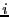
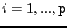

Designed and written by Luca Cardelli, James Donahue, Lucille Glassman, Mick Jordan, Bill Kalsow, and Greg Nelson.
The language designer should be familiar with many alternative features designed by others, and should have excellent judgment in choosing the best and rejecting any that are mutually inconsistent... One thing he should not do is to include untried ideas of his own. His task is consolidation, not innovation. --C.A.R. Hoare
The original definition of Modula-3 was given in SRC Research Report 31, August 1988. It was revised in report 52, November 1989. And finally published in Systems Programming with Modula-3, November 1989.
This edition of the language definition is derived from all of the above. In the few places where it differs from the version published in Systems Programming with Modula-3, this on-line version is correct. The errata to the published version are available. A multi-page, hierarchical version of this language definition is also available.
Copyright (C) 1988 Digital Equipment Corporation, Ing. C. Olivetti and C., SpA.
This work may not be copied or reproduced in whole or in part except in accordance with this provision. Permission to copy in whole or in part without payment of fee is granted only to licensees under (and is subject to the terms and conditions of) the Digital License Agreement for SRC Modula-3, as it appears, for example, on the Internet at the URL http://www.research.digital.com/SRC/m3sources/html/COPYRIGHT.html. All such whole or partial copies must include the following: a notice that such copying is by permission of the Systems Research Center of Digital Equipment Corporation in Palo Alto, California; an acknowledgment of the authors and individual contributors to the work; and this copyright notice. All rights reserved.
RAISE, TRY-EXCEPT,
TRY-FINALLY, LOOP, EXIT, RETURN,
IF, WHILE, REPEAT, WITH, FOR,
CASE, TYPECASE, LOCK, INC, & DEC
Modula-3 was designed by Luca Cardelli, Jim Donahue, Mick Jordan, Bill Kalsow, and Greg Nelson, as a joint project by the Digital Equipment Corporation Systems Research Center and the Olivetti Research Center. Paul Rovner made many contributions as a founding member of the design committee. The language specification was written by Lucille Glassman and Greg Nelson, under the watchful supervision of the whole committee.
Maurice Wilkes had the inspiration that sparked the project.
Our technical starting point was Modula-2+, which was designed by Paul Rovner, Roy Levin, John Wick, Andrew Birrell, Butler Lampson, and Garret Swart. We made good use of the ruthlessly complete description of Modula-2+ in Mary-Claire van Leunen's Modula-2+ User's Manual. The ideas in the ``+'' part of Modula-2+ were mostly derived from the Mesa and Cedar languages developed at Xerox PARC.
Niklaus Wirth designed Modula-2, the starting point of our starting point. He also reviewed the evolving design and made many valuable suggestions--not one of which was a suggested addition. Indeed, he inspired us with the courage to pull out a number of deep-rooted weeds.
SRC Modula-3 was implemented by Bill Kalsow and Eric Muller. Olivetti Modula-3 was implemented by Mick Jordan, Trevor Morris, David Chase, Steve Glassman, and Marion Sturtevant.
The language and book were greatly improved by the helpful feedback from Bob Ayers, Andrew Black, Regis Crelier, Dan Craft, Hans Eberle, John Ellis, Stu Feldman, Michel Gangnet, Lucille Glassman, David Goldberg, Stephen Harrison, Sam Harbison, Jim Horning, Solange Karsenty, Mike Kupfer, Butler Lampson, Mark Manasse, Tim Mann, Eliot Moss, Dick Orgass, Sharon Perl, Norman Ramsey, Lyle Ramshaw, Eric Roberts, Peter Robinson, Ed Satterthwaite, Jorge Stolfi, Garret Swart, Chuck Thacker, and Ken Zadeck.
We are grateful for the support of Digital Equipment Corporation in general, and Bob Taylor and Sam Fuller in particular.
He that will not apply new remedies must expect new evils: for time is the greatest innovator, and if time of course alter things to the worse, and wisdom and counsel shall not alter them to the better, what shall be the end? --Francis Bacon
On November 6th, 1986, Maurice Wilkes wrote to Niklaus Wirth proposing that the Modula-2+ language be revised and standardized as a successor to Modula-2. Wirth gave this project his blessing, and the Modula-3 committee was born.
At the first meeting, the committee unanimously agreed to be true to the spirit of Modula-2 by selecting simple, safe, proven features rather than experimenting with our own untried ideas. We found that unanimity was harder to achieve when we got to the details.
Modula-3 supports interfaces, objects, generics, lightweight threads of control, the isolation of unsafe code, garbage collection, exceptions, and subtyping. Some of the more problematical features of Modula-2 have been removed, like variant records and the built-in unsigned numeric data type. Modula-3 is substantially simpler than other languages with comparable power.
Modula-3 is closely based on Modula-2+, which was designed at the Digital Equipment Corporation Systems Research Center and used to build the Topaz system [McJones89, Rovner86]. The Modula-3 design was a joint project by Digital and Olivetti. The language definition was published in August 1988, and immediately followed by implementation efforts at both companies. In January 1989, the committee revised the language to reflect the experiences of these implementation teams. A few final revisions were made for the publication of this book.
SRC Modula-3 is distributed by the DEC Systems Research Center under a liberal license. The distribution includes a compiler for Modula-3, the Modula-3 Abstract Syntax Tree toolkit developed at Olivetti, and a runtime system with configuration files for DEC, IBM, HP, and Sun workstations.
Most systems programming today is done in the BCPL family of languages, which includes B, Bliss, and C. The beauty of these languages is the modest cost with which they were able to take a great leap forward from assembly language. To fully appreciate them, you must consider the engineering constraints of machines in the 1960s. What language designed in the 1980s has a compiler that fits into four thousand 18-bit words, like Ken Thompson's B compiler for the PDP-7? The most successful of these languages was C, which by the early 1970s had almost completely displaced assembly language in the Unix system.
The BCPL-like languages are easy to implement efficiently for the same reason they are attractive to skeptical assembly language programmers: they present a programming model that is close to the target machine. Pointers are identified with arrays, and address arithmetic is ubiquitous. Unfortunately, this low-level programming model is inherently dangerous. Many errors are as disastrous as they would be in machine language. The type system is scanty, and reveals enough quirks of the target machine that even experienced and disciplined programmers sometimes write unportable code simply by accident. The most modern language in this family, C++, has enriched C by adding objects; but it has also given up C's best virtue--simplicity--without relieving C's worst drawback--its low-level programming model.
At the other extreme are languages like Lisp, ML, Smalltalk, and CLU, whose
programming models originate from mathematics. Lisp is the hybrid of the
lambda calculus and the theory of a pairing function; ML stems from
polymorphic type theory; Smalltalk from a theory of objects and inheritance;
CLU from a theory of abstract data types. These languages have beautiful
programming models, but they tend to be difficult to implement efficiently,
because the uniform treatment of values in the programming model invites a
runtime system in which values are uniformly represented by pointers. If the
implementer doesn't take steps to avoid it, as simple a statement as
n := n + 1 could require an allocation, a method lookup, or both. Good
implementations avoid most of the cost, and languages in this family have been
used successfully for systems programming. But their general disposition
towards heap allocation rather than stack allocation remains, and they have
not become popular with systems programmers. The runtime systems required to
make these languages efficient often isolate them in closed environments that
cannot accommodate programs written in other languages. If you are a fan of
these languages you may find Modula-3 overly pragmatic; but read on anyway,
and give us a chance to show that pragmatic constraints do not exclude
attractive solutions.
Between the extremes of BCPL and Lisp is the Algol family of languages, whose modern representatives include Pascal, Ada, Modula-2, and Modula-3. These languages have programming models that reflect the engineering constraints of random-access machines but conceal the details of any particular machine. They give up the beauty and mathematical symmetry of the Lisp family in order to make efficient implementations possible without special tricks; they also have strong type systems that avoid most of the dangerous and machine-dependent features of the BCPL family.
In the 1960s, the trend in the Algol family was toward features for control flow and data structuring. In the 1970s, the trend was toward information-hiding features like interfaces, opaque types, and generics. More recently, the trend in the Algol family has been to adopt a careful selection of techniques from the Lisp and BCPL families. This trend is demonstrated by Modula-3, Oberon, and Cedar, to name three languages that have floated portable implementations in the last few years.
Modula-3, Oberon, and Cedar all provide garbage collection, previously viewed as a luxury available only in the closed runtime systems of the Lisp family. But the world is starting to understand that garbage collection is the only way to achieve an adequate level of safety, and that modern garbage collectors can work in open runtime environments.
At the same time, these three languages allow a small set of unsafe, machine-dependent operations of the sort usually associated with the BCPL family. In Modula-3, unsafe operations are allowed only in modules explicitly labeled unsafe. The combination of garbage collection with the explicit isolation of unsafe features produces a language suitable for programming entire systems from the highest-level applications down to the lowest-level device drivers.
[ This section discusses the organization of the entire book, Systems Programming with Modula-3. It doesn't seem worth including this material in the on-line version. ]
The remainder of the introduction is an overview of the most important features of Modula-3.
One of Modula-2's most successful features is the provision for explicit interfaces between modules. Interfaces are retained with essentially no changes in Modula-3. An interface to a module is a collection of declarations that reveal the public parts of a module; things in the module that are not declared in the interface are private. A module imports the interfaces it depends on and exports the interface (or, in Modula-3, the interfaces) that it implements.
Interfaces make separate compilation type-safe; but it does them an injustice to look at them in such a limited way. Interfaces make it possible to think about large systems without holding the whole system in your head at once.
Programmers who have never used Modula-style interfaces tend to underestimate them, observing, for example, that anything that can be done with interfaces can also be done with C-style include files. This misses the point: many things can be done with include files that cannot be done with interfaces. For example, the meaning of an include file can be changed by defining macros in the environment into which it is included. Include files tempt programmers into shortcuts across abstraction boundaries. To keep large programs well structured, you either need super-human will power, or proper language support for interfaces.
The better we understand our programs, the bigger the building blocks we use to structure them. After the instruction came the statement, after the statement came the procedure, after the procedure came the interface. The next step seems to be the abstract type.
At the theoretical level, an abstract type is a type defined by the specifications of its operations instead of by the representation of its data. As realized in modern programming languages, a value of an abstract type is represented by an ``object'' whose operations are implemented by a suite of procedure values called the object's ``methods''. A new object type can be defined as a subtype of an existing type, in which case the new type has all the methods of the old type, and possibly new ones as well (inheritance). The new type can provide new implementations for the old methods (overriding).
Objects were invented in the mid-sixties by the farsighted designers of Simula [Birtwistle]. Objects in Modula-3 are very much like objects in Simula: they are always references, they have both data fields and methods, and they have single inheritance but not multiple inheritance.
Small examples are often used to get across the basic idea: truck as a subtype of vehicle; rectangle as a subtype of polygon. Modula-3 aims at larger systems that illustrate how object types provide structure for large programs. In Modula-3 the main design effort is concentrated into specifying the properties of a single abstract type--a stream of characters, a window on the screen. Then dozens of interfaces and modules are coded that provide useful subtypes of the central abstraction. The abstract type provides the blueprint for a whole family of interfaces and modules. If the central abstraction is well-designed then useful subtypes can be produced easily, and the original design cost will be repaid with interest.
The combination of object types with Modula-2 opaque types produces something new: the partially opaque type, where some of an object's fields are visible in a scope and others are hidden. Because the committee had no experience with partially opaque types, the first version of Modula-3 restricted them severely; but after a year of experience it was clear that they were a good thing, and the language was revised to remove the restrictions.
It is possible to use object-oriented techniques even in languages that were not designed to support them, by explicitly allocating the data records and method suites. This approach works reasonably smoothly when there are no subtypes; however it is through subtyping that object-oriented techniques offer the most leverage. The approach works badly when subtyping is needed: either you allocate the data records for the different parts of the object individually (which is expensive and notationally cumbersome) or you must rely on unchecked type transfers, which is unsafe. Whichever approach is taken, the subtype relations are all in the programmer's head: only with an object-oriented language is it possible to get object-oriented static typechecking.
A generic module is a template in which some of the imported interfaces are regarded as formal parameters, to be bound to actual interfaces when the generic is instantiated. For example, a generic hash table module could be instantiated to produce tables of integers, tables of text strings, or tables of any desired type. The different generic instances are compiled independently: the source program is reused, but the compiled code will generally be different for different instances.
To keep Modula-3 generics simple, they are confined to the module level: generic procedures and types do not exist in isolation, and generic parameters must be entire interfaces.
In the same spirit of simplicity, there is no separate typechecking associated with generics. Implementations are expected to expand the generic and typecheck the result. The alternative would be to invent a polymorphic type system flexible enough to express the constraints on the parameter interfaces that are necessary in order for the generic body to compile. This has been achieved for ML and CLU, but it has not yet been achieved satisfactorily in the Algol family of languages, where the type systems are less uniform. (The rules associated with Ada generics are too complicated for our taste.)
Dividing a computation into concurrent processes (or threads of control) is a fundamental method of separating concerns. For example, suppose you are programming a terminal emulator with a blinking cursor: the most satisfactory way to separate the cursor blinking code from the rest of the program is to make it a separate thread. Or suppose you are augmenting a program with a new module that communicates over a buffered channel. Without threads, the rest of the program will be blocked whenever the new module blocks on its buffer, and conversely, the new module will be unable to service the buffer whenever any other part of the program blocks. If this is unacceptable (as it almost always is) there is no way to add the new module without finding and modifying every statement of the program that might block. These modifications destroy the structure of the program by introducing undesirable dependencies between what would otherwise be independent modules.
The provisions for threads in Modula-2 are weak, amounting essentially to
coroutines. Hoare's monitors [Hoare] are a sounder basis for concurrent
programming. Monitors were used in Mesa, where they worked well; except that
the requirement that a monitored data structure be an entire module was
irksome. For example, it is often useful for a monitored data structure to be
an object instead of a module. Mesa relaxed this requirement, made a slight
change in the details of the semantics of Hoare's Signal primitive, and
introduced the Broadcast primitive as a convenience [Lampson]. The Mesa
primitives were simplified in the Modula-2+ design, and the result was
successful enough to be incorporated with no substantial changes in Modula-3.
A threads package is a tool with a very sharp edge. A common programming error is to access a shared variable without obtaining the necessary lock. This introduces a race condition that can lie dormant throughout testing and strike after the program is shipped. Theoretical work on process algebra has raised hopes that the rendezvous model of concurrency may be safer than the shared memory model, but the experience with Ada, which adopted the rendezvous, lends at best equivocal support for this hope--Ada still allows shared variables, and apparently they are widely used.
A language feature is unsafe if its misuse can corrupt the runtime system so that further execution of the program is not faithful to the language semantics. An example of an unsafe feature is array assignment without bounds checking: if the index is out of bounds, then an arbitrary location can be clobbered and the address space can become fatally corrupted. An error in a safe program can cause the computation to abort with a run-time error message or to give the wrong answer, but it can't cause the computation to crash in a rubble of bits.
Safe programs can share the same address space, each safe from corruption by errors in the others. To get similar protection for unsafe programs requires placing them in separate address spaces. As large address spaces become available, and programmers use them to produce tightly-coupled applications, safety becomes more and more important.
Unfortunately, it is generally impossible to program the lowest levels of a system with complete safety. Neither the compiler nor the runtime system can check the validity of a bus address for an I/O controller, nor can they limit the ensuing havoc if it is invalid. This presents the language designer with a dilemma. If he holds out for safety, then low level code will have to be programmed in another language. But if he adopts unsafe features, then his safety guarantee becomes void everywhere.
The languages of the BCPL family are full of unsafe features; the languages of the Lisp family generally have none (or none that are documented). In this area Modula-3 follows the lead of Cedar by adopting a small number of unsafe features that are allowed only in modules explicitly labeled unsafe. In a safe module, the compiler prevents any errors that could corrupt the runtime system; in an unsafe module, it is the programmer's responsibility to avoid them.
A classic unsafe runtime error is to free a data structure that is still reachable by active references (or ``dangling pointers''). The error plants a time bomb that explodes later, when the storage is reused. If on the other hand the programmer fails to free records that have become unreachable, the result will be a ``storage leak'' and the computation space will grow without bound. Problems due to dangling pointers and storage leaks tend to persist long after other errors have been found and removed. The only sure way to avoid these problems is the automatic freeing of unreachable storage, or garbage collection.
Modula-3 therefore provides ``traced references'', which are like Modula-2 pointers except that the storage they point to is kept in the ``traced heap'' where it will be freed automatically when all references to it are gone.
Another great benefit of garbage collection is that it simplifies interfaces.
Without garbage collection, an interface must specify whether the client or
the implementation has the responsibility for freeing each allocated
reference, and the conditions under which it is safe to do so. This can swamp
the interface in complexity. For example, Modula-3 supports text strings by a
simple required interface Text, rather than with a built-in type.
Without garbage collection, this approach would not be nearly as attractive.
New refinements in garbage collection have appeared continually for more than twenty years, but it is still difficult to implement efficiently. For many programs, the programming time saved by simplifying interfaces and eliminating storage leaks and dangling pointers makes garbage collection a bargain, but the lowest levels of a system may not be able to afford it. For example, in SRC's Topaz system, the part of the operating system that manages files and heavy-weight processes relies on garbage collection, but the inner ``nub'' that implements virtual memory and thread context switching does not. Essentially all Topaz application programs rely on garbage collection.
For programs that cannot afford garbage collection, Modula-3 provides a set of reference types that are not traced by the garbage collector. In most other respects, traced and untraced references behave identically.
An exception is a control construct that exits many scopes at once. Raising an exception exits active scopes repeatedly until a handler is found for the exception, and transfers control to the handler. If there is no handler, the computation terminates in some system-dependent way--for example, by entering the debugger.
There are many arguments for and against exceptions, most of which revolve around inconclusive issues of style and taste. One argument in their favor that has the weight of experience behind it is that exceptions are a good way to handle any runtime error that is usually, but not necessarily, fatal. If exceptions are not available, each procedure that might encounter a runtime error must return an additional code to the caller to identify whether an error has occurred. This can be clumsy, and has the practical drawback that even careful programmers may inadvertently omit the test for the error return code. The frequency with which returned error codes are ignored has become something of a standing joke in the Unix/C world. Raising an exception is more robust, since it stops the program unless there is an explicit handler for it.
Like all languages in the Algol family, Modula-3 is strongly typed. The basic
idea of strong typing is to partition the value space into types, restrict
variables to hold values of a single type, and restrict operations to apply to
operands of fixed types. In actuality, strong typing is rarely so simple.
For example, each of the following complications is present in at least one
language of the Algol family: a variable of type [0..9] may be safely
assigned to an INTEGER, but not vice-versa (subtyping). Operations
like absolute value may apply both to REALs and to INTEGERs
instead of to a single type (overloading). The types of literals (for
example, NIL) can be ambiguous. The type of an expression may be
determined by how it is used (target-typing). Type mismatches may cause
automatic conversions instead of errors (as when a fractional real is rounded
upon assignment to an integer).
We adopted several principles in order to make Modula-3's type system as uniform as possible. First, there are no ambiguous types or target-typing: the type of every expression is determined by its subexpressions, not by its use. Second, there are no automatic conversions. In some cases the representation of a value changes when it is assigned (for example, when assigning to a packed field of a record type) but the abstract value itself is transferred without change. Third, the rules for type compatibility are defined in terms of a single subtype relation. The subtype relation is required for treating objects with inheritance, but it is also useful for defining the type compatibility rules for conventional types.
In the early days of the Ada project, a general in the Ada Program Office opined that ``obviously the Department of Defense is not interested in an artificially simplified language such as Pascal''. Modula-3 represents the opposite point of view. We used every artifice that we could find or invent to make the language simple.
C.A.R. Hoare has suggested that as a rule of thumb a language is too complicated if it can't be described precisely and readably in fifty pages. The Modula-3 committee elevated this to a design principle: we gave ourselves a ``complexity budget'' of fifty pages, and chose the most useful features that we could accommodate within this budget. In the end, we were over budget by six lines plus the syntax equations. This policy is a bit arbitrary, but there are so many good ideas in programming language design that some kind of arbitrary budget seems necessary to keep a language from getting too complicated.
In retrospect, the features that made the cut were directed toward two main goals. Interfaces, objects, generics, and threads provide fundamental patterns of abstraction that help to structure large programs. The isolation of unsafe code, garbage collection, and exceptions help make programs safer and more robust. Of the techniques that we used to keep the language internally consistent, the most important was the definition of a clean type system based on a subtype relation. There is no special novelty in any one of these features individually, but there is simplicity and power in their combination.
A Modula-3 program specifies a computation that acts on a sequence of digital
components called locations. A variable is a set of locations
that represents a mathematical value according to a convention determined by
the variable's type. If a value can be represented by some variable of
type T, then we say that the value is a member of T and
T contains the value.
An identifier is a symbol declared as a name for a variable, type, procedure, etc. The region of the program over which a declaration applies is called the scope of the declaration. Scopes can be nested. The meaning of an identifier is determined by the smallest enclosing scope in which the identifier is declared.
An expression specifies a computation that produces a value or variable. Expressions that produce variables are called designators. A designator can denote either a variable or the value of that variable, depending on the context. Some designators are readonly, which means that they cannot be used in contexts that might change the value of the variable. A designator that is not readonly is called writable. Expressions whose values can be determined statically are called constant expressions ; they are never designators.
A static error is an error that the implementation must detect before program execution. Violations of the language definition are static errors unless they are explicitly classified as runtime errors.
A checked runtime error is an error that the implementation must detect and report at runtime. The method for reporting such errors is implementation-dependent. (If the implementation maps them into exceptions, then a program could handle these exceptions and continue.)
An unchecked runtime error is an error that is not guaranteed to be detected, and can cause the subsequent behavior of the computation to be arbitrary. Unchecked runtime errors can occur only in unsafe modules.
I am the voice of today, the herald of tomorrow... I am the leaden army that conquers the world--I am TYPE. --Frederic William Goudy
Modula-3 uses structural equivalence, instead of the name equivalence of Modula-2. Two types are the same if their definitions become the same when expanded; that is, when all constant expressions are replaced by their values and all type names are replaced by their definitions. In the case of recursive types, the expansion is the infinite limit of the partial expansions. A type expression is generally allowed wherever a type is required.
A type is empty if it contains no values. For example, [1..0]
is an empty type. Empty types can be used to build non-empty types (for
example, SET OF [1..0], which is not empty because it contains the
empty set). It is a static error to declare a variable of an empty type.
Every expression has a statically-determined type, which contains every value that the expression can produce. The type of a designator is the type of the variable it produces.
Assignability and type compatibility are defined in terms of a single
syntactically specified subtype relation with the property that if T is
a subtype of U, then every member of T is a member of U.
The subtype relation is reflexive and transitive.
Every expression has a unique type, but a value can be a member of many types.
For example, the value 6 is a member of both [0..9] and
INTEGER. It would be ambiguous to talk about ``the type of a value''.
Thus the phrase ``type of x'' means ``type of the expression
x'', while ``x is a member of T'' means ``the value of
x is a member of T''.
However, there is one sense in which a value can be said to have a type: every
object or traced reference value includes a code for a type, called the
allocated type of the reference value. The allocated type is tested by
TYPECASE.
There are three kinds of ordinal types: enumerations, subranges, and integers.
There are two integer types, which in order of increasing range
are INTEGER and LONGINT.
An enumeration type is declared like this:
TYPE T = {id_1, id_2, ..., id_n}
where the id's are distinct identifiers. The type T is an
ordered set of n values; the expression T.id_ denotes the
'th value of the type in increasing order. The empty enumeration
{ } is allowed.
Integers and enumeration elements are collectively called ordinal
values. The base type of an ordinal value v is
INTEGER (or LONGINT) if v is an integer (or extended
range integer, respectively), otherwise it is the unique enumeration type
that contains v.
A subrange type is declared like this:
TYPE T = [Lo..Hi]
where Lo and Hi are two ordinal values with the same base type,
called the base type of the subrange. The values of T are all the
values from Lo to Hi inclusive. Lo and Hi must be
constant expressions. If Lo exceeds Hi, the subrange is empty.
The operators ORD and VAL convert between enumerations and
integers. The operators FIRST, LAST, and NUMBER applied
to an ordinal type return the first element, last element, and number of
elements, respectively.
Here are the predeclared ordinal types:
The first 256 elements of type
INTEGERAll integers represented by the implementation LONGINTExtended range integers, with at least as much range as INTEGERCARDINALBehaves just like the subrange [0..LAST(INTEGER)]BOOLEANThe enumeration {FALSE, TRUE}CHARAn enumeration containing at least 256 elements WIDECHARAn enumeration containing at least 65536 elements
CHAR represent characters in the
ISO-Latin-1 code, which is an extension of ASCII.
The first 65536 elements of type WIDECHAR represent characters in the
Unicode character code.
The language does not specify the names of the elements of the CHAR
or WIDECHAR enumerations. The syntax
for character literals is specified in the section on literals. FALSE
and TRUE are predeclared synonyms for BOOLEAN.FALSE and
BOOLEAN.TRUE.
Each distinct enumeration type introduces a new collection of values, but a subrange type reuses the values from the underlying type. For example:
TYPE
T1 = {A, B, C};
T2 = {A, B, C};
U1 = [T1.A..T1.C];
U2 = [T1.A..T2.C]; (* sic *)
V = {A, B}
T1 and T2 are the same type, since they have the same expanded
definition. In particular, T1.C = T2.C and therefore U1 and
U2 are also the same type. But the types T1 and U1 are
distinct, although they contain the same values, because the expanded
definition of T1 is an enumeration while the expanded definition of
U1 is a subrange. The type V is a third type whose values
V.A and V.B are not related to the values T1.A and
T1.B.
There are three floating point types, which in order of increasing range and
precision are REAL, LONGREAL, and EXTENDED. The
properties of these types are specified by required interfaces.
An array is an indexed collection of component variables, called the elements of the array. The indexes are the values of an ordinal type, called the index type of the array. The elements all have the same size and the same type, called the element type of the array.
There are two kinds of array types, fixed and open. The length of a fixed array is determined at compile time. The length of an open array type is determined at runtime, when it is allocated or bound. The length cannot be changed thereafter.
The shape of a multi-dimensional array is the sequence of its lengths in each dimension. More precisely, the shape of an array is its length followed by the shape of any of its elements; the shape of a non-array is the empty sequence.
Arrays are assignable if they have the same element type and shape. If either the source or target of the assignment is an open array, a runtime shape check is required.
A fixed array type declaration has the form:
TYPE T = ARRAY Index OF Element
where Index is an ordinal type and Element is any type other
than an open array type. The values of type T are arrays whose element
type is Element and whose length is the number of elements of the type
Index. If Element is an empty type, then so is T.
If a has type T, then a[i] designates the element of
a whose position corresponds to the position of i in
Index. For example, consider the declarations:
VAR a := ARRAY [1..3] OF REAL {1.0, 2.0, 3.0};
VAR b: ARRAY [-1..1] OF REAL := a;
Now a = b is TRUE; yet a[1] = 1.0 while
b[1] = 3.0. The interpretation of indexes is determined by an array's
type, not its value; the assignment b := a changes b's value,
not its type. (This example uses variable initialization, and array
constructors.)
An expression of the form:
ARRAY Index_1, ..., Index_n OF Element
is shorthand for:
ARRAY Index_1 OF ... OF ARRAY Index_n OF Element
This shorthand is eliminated from the expanded type definition used to define
structural equivalence. An expression of the form a[i_1, ..., i_n] is
shorthand for a[i_1]...[i_n].
An open array type declaration has the form:
TYPE T = ARRAY OF Element
where Element is any type. The values of T are arrays whose
element type is Element and whose length is arbitrary. The index type
of an open array is the integer subrange [0..n-1], where n is
the length of the array. If Element is an empty type, then so
is T.
An open array type can be used only as the type of a formal parameter, the referent of a reference type, the element type of another open array type, or as the type in an array constructor.
Examples of array types:
TYPE
Transform = ARRAY [1..3], [1..3] OF REAL;
Vector = ARRAY OF REAL;
SkipTable = ARRAY CHAR OF INTEGER
A record is a sequence of named variables, called the fields of
the record. Different fields can have different types. The name and type of
each field is statically determined by the record's type. The expression
r.f designates the field named f in the record r.
A record type declaration has the form:
TYPE T = RECORD FieldList END
where FieldList is a list of field declarations, each of which has the
form:
fieldName: Type := default
where fieldName is an identifier, Type is any non-empty type
other than an open array type, and default is a constant expression.
The field names must be distinct. A record is a member of T if it has
fields with the given names and types, in the given order, and no other
fields. Empty records are allowed.
The constant default is a default value used when a record is
constructed or allocated. Either ``:= default'' or ``: Type''
can be omitted, but not both. If Type is omitted, it is taken to be
the type of default. If both are present, the value of default
must be a member of Type.
When a series of fields shares the same type and default, any fieldName
can be a list of identifiers separated by commas. Such a list is shorthand
for a list in which the type and default are repeated for each identifier.
That is:
f_1, ..., f_m: Type := default
is shorthand for:
f_1: Type := default; ...; f_m: Type := default
This shorthand is eliminated from the expanded definition of the type. The
default values are included.
Examples of record types:
TYPE
Time = RECORD
seconds: INTEGER;
milliseconds: [0..999]
END;
Alignment = {Left, Center, Right};
TextWindowStyle = RECORD
align := Alignment.Center;
font := Font.Default;
foreground := Color.Black;
background := Color.White;
margin, border := 2
END
A declaration of a packed type has the form:
TYPE T = BITS n FOR Base
where Base is a type and n is an integer-valued constant
expression. The values of type T are the same as the values of type
Base, but variables of type T that occur in records, objects, or
arrays will occupy exactly n bits and be packed adjacent to the
preceding field or element. For example, a variable of type
ARRAY [0..255] OF BITS 1 FOR BOOLEAN
is an array of 256 booleans, each of which occupies one bit of storage.
The values allowed for n are implementation-dependent. An illegal
value for n is a static error. The legality of a packed type can
depend on its context; for example, an implementation could prohibit packed
integers from spanning word boundaries.
A set is a collection of values taken from some ordinal type. A set type declaration has the form:
TYPE T = SET OF Base
where Base is an ordinal type. The values of T are all sets
whose elements have type Base. For example, a variable whose type is
SET OF [0..1] can assume the following values:
{} {0} {1} {0,1}
Implementations are expected to use the same representation for a
SET OF T as for an ARRAY T OF BITS 1 FOR BOOLEAN. Hence,
programmers should expect SET OF [0..1023] to be practical, but not
SET OF INTEGER.
A reference value is either NIL or the address of a variable,
called the referent.
A reference type is either traced or untraced. When all traced references to a piece of allocated storage are gone, the implementation reclaims the storage. Two reference types are of the same reference class if they are both traced or both untraced. A general type is traced if it is a traced reference type, a record type any of whose field types is traced, an array type whose element type is traced, or a packed type whose underlying unpacked type is traced.
A declaration for a traced reference type has the form:
TYPE T = REF Type
where Type is any type. The values of T are traced references
to variables of type Type, which is called the referent type of
T.
A declaration for an untraced reference type has the form:
TYPE T = UNTRACED REF Type
where Type is any untraced type. (This restriction is lifted in unsafe
modules.) The values of T are the untraced references to variables of
type Type.
In both the traced and untraced cases, the keyword REF can optionally
be preceded by ``BRANDED b'' where b is a text constant called
the brand. Brands distinguish types that would otherwise be the same;
they have no other semantic effect. All brands in a program must be distinct.
If BRANDED is present and b is absent, the implementation
automatically supplies a unique value for b. Explicit brands are
useful for persistent data storage.
The following reference types are predeclared:
The
REFANYContains all traced references ADDRESSContains all untraced references NULLContains only NIL
TYPECASE statement can be used to test the referent type of a
REFANY or object, but there is no such test for an ADDRESS.
Examples of reference types:
TYPE TextLine = REF ARRAY OF CHAR;
ControllerHandle = UNTRACED REF RECORD
status: BITS 8 FOR [0..255];
filler: BITS 12 FOR [0..0];
pc: BITS 12 FOR [0..4095]
END;
T = BRANDED "ANSI-M3-040776" REF INTEGER;
Apple = BRANDED REF INTEGER;
Orange = BRANDED REF INTEGER;
A procedure is either NIL or a triple consisting of:
A procedure that returns a result is called a function procedure; a procedure that does not return a result is called a proper procedure. A top-level procedure is a procedure declared in the outermost scope of a module. Any other procedure is a local procedure. A local procedure can be passed as a parameter but not assigned, since in a stack implementation a local procedure becomes invalid when the frame for the procedure containing it is popped.
A procedure constant is an identifier declared as a procedure. (As opposed to a procedure variable, which is a variable declared with a procedure type.)
A procedure type declaration has the form:
TYPE T = PROCEDURE sig
where sig is a signature specification, which has the form:
(formal_1; ...; formal_n): R RAISES S
where
formal_ is a formal parameter declaration, as described
below.
R is the result type, which can be any type but an open array
type. The ``: R'' can be omitted, making the signature that of a
proper procedure.
S is the raises set, which is either an explicit set of
exceptions with the syntax {E_1, ..., E_n}, or the symbol ANY
representing the set of all exceptions. If ``RAISES S'' is omitted,
``RAISES {}'' is assumed.
A formal parameter declaration has the form
Mode Name: Type := Default
where
Mode is a parameter mode, which can be VALUE, VAR,
or READONLY. If Mode is omitted, it defaults to VALUE.
Name is an identifier that names the parameter. The parameter
names must be distinct.
Type is the type of the parameter.
Default is a constant expression, the default value for the
parameter. If Mode is VAR, ``:= Default'' must be
omitted, otherwise either ``:= Default'' or ``: Type'' can be
omitted, but not both. If Type is omitted, it is taken to be the
type of Default. If both are present, the value of Default
must be a member of Type.
When a series of parameters share the same mode, type, and default,
Name can be a list of identifiers separated by commas. Such a list is
shorthand for a list in which the mode, type, and default are repeated for
each identifier. That is:
Mode v_1, ..., v_n: Type := Default
is shorthand for:
Mode v_1: Type := Default; ...; Mode v_n: Type := Default
This shorthand is eliminated from the expanded definition of the type. The
default values are included.
A procedure value P is a member of the type T if it is
NIL or its signature is covered by the signature of T,
where signature_1 covers signature_2 if:
signature_1 contains the raises set of
signature_2.
The parameter names and defaults affect the type of a procedure, but not its value. For example, consider the declarations:
PROCEDURE P(txt: TEXT := "P") =
BEGIN
Wr.PutText(Stdio.stdout, txt)
END P;
VAR q: PROCEDURE(txt: TEXT := "Q") := P;
Now P = q is TRUE, yet P() prints ``P'' and
q() prints ``Q''. The interpretation of defaulted parameters is
determined by a procedure's type, not its value; the assignment q := P
changes q's value, not its type.
Examples of procedure types:
TYPE
Integrand = PROCEDURE (x: REAL): REAL;
Integrator = PROCEDURE(f: Integrand; lo, hi: REAL): REAL;
TokenIterator = PROCEDURE(VAR t: Token) RAISES {TokenError};
RenderProc = PROCEDURE(
scene: REFANY;
READONLY t: Transform := Identity)
In a procedure type, RAISES binds to the closest preceding
PROCEDURE. That is, the parentheses are required in:
TYPE T = PROCEDURE (): (PROCEDURE ()) RAISES {}
An object is either NIL or a reference to a data record paired
with a method suite, which is a record of procedures that will accept the
object as a first argument.
An object type determines the types of a prefix of the fields of the data
record, as if ``OBJECT'' were ``REF RECORD''. But in the case
of an object type, the data record can contain additional fields introduced by
subtypes of the object type. Similarly, the object type determines a prefix
of the method suite, but the suite can contain additional methods introduced
by subtypes.
If o is an object, then o.f designates the data field named
f in o's data record. If m is one of o's methods,
an invocation of the form o.m(...) denotes an execution of o's
m method. An object's methods can be invoked, but not read or written.
If T is an object type and m is the name of one of T's
methods, then T.m denotes T's m method. This notation
makes it convenient for a subtype method to invoke the corresponding method of
one of its supertypes.
A field or method in a subtype masks any field or method with the same name in
the supertype. To access such a masked field, use NARROW to view the
subtype variable as a member of the supertype, as illustrated below.
Object assignment is reference assignment. Objects cannot be dereferenced, since the static type of an object variable does not determine the type of its data record. To copy the data record of one object into another, the fields must be assigned individually.
There are two predeclared object types:
ROOTThe traced object type with no fields or methods UNTRACED ROOTThe untraced object type with no fields or methods
The declaration of an object type has the form:
TYPE T = ST OBJECT
Fields
METHODS
Methods
OVERRIDES
Overrides
END
where ST is an optional supertype, Fields is a list of field
declarations, exactly as in a record type, Methods is a list of
method declarations and Overrides is a list of method
overrides. The fields of T consist of the fields of ST
followed by the fields declared in Fields. The methods of T
consist of the methods of ST modified by Overrides and followed
by the methods declared in Methods. T has the same reference
class as ST.
The names introduced in Fields and Methods must be distinct from
one another and from the names overridden in Overrides. If ST
is omitted, it defaults to ROOT. If ST is untraced, then the
fields must not include traced types. (This restriction is lifted in unsafe
modules.) If ST is declared as an opaque type, the declaration of
T is legal only in scopes where ST's concrete type is known to
be an object type.
The keyword OBJECT can optionally be preceded by ``BRANDED'' or
by ``BRANDED b'', where b is a text constant. The meaning is
the same as in non-object reference types.
A method declaration has the form:
m sig := proc
where m is an identifier, sig is a procedure signature, and
proc is a top-level procedure constant. It specifies that T's
m method has signature sig and value proc. If
``:= proc'' is omitted, ``:= NIL'' is assumed. If proc
is non-nil, its first parameter must have mode VALUE and type some
supertype of T, and dropping its first parameter must result in a
signature that is covered by sig.
A method override has the form:
m := proc
where m is the name of a method of the supertype ST and
proc is a top-level procedure constant. It specifies that the m
method for T is proc, rather than ST.m. If proc
is non-nil, its first parameter must have mode VALUE and type some
supertype of T, and dropping its first parameter must result in a
signature that is covered by the signature of ST's m method.
Examples. Consider the following declarations:
TYPE
A = OBJECT a: INTEGER; METHODS p() END;
AB = A OBJECT b: INTEGER END;
PROCEDURE Pa(self: A) = ... ;
PROCEDURE Pab(self: AB) = ... ;
The procedures Pa and Pab are candidate values for the p
methods of objects of types A and AB. For example:
TYPE T1 = AB OBJECT OVERRIDES p := Pab END
declares a type with an AB data record and a p method that
expects an AB. T1 is a valid subtype of AB. Similarly,
TYPE T2 = A OBJECT OVERRIDES p := Pa END
declares a type with an A data record and a method that expects an
A. T2 is a valid subtype of A. A more interesting
example is:
TYPE T3 = AB OBJECT OVERRIDES p := Pa END
which declares a type with an AB data record and a p method that
expects an A. Since every AB is an A, the method is not
too choosy for the objects in which it will be placed. T3 is a valid
subtype of AB. In contrast,
TYPE T4 = A OBJECT OVERRIDES p := Pab END
attempts to declare a type with an A data record and a method that
expects an AB; since not every A is an AB, the method is
too choosy for the objects in which it would be placed. The declaration of
T4 is a static error.
The following example illustrates the difference between declaring a new method and overriding an existing method. After the declarations
TYPE
A = OBJECT METHODS m() := P END;
B = A OBJECT OVERRIDES m := Q END;
C = A OBJECT METHODS m() := Q END;
VAR
a := NEW(A); b := NEW(B); c := NEW(C);
we have that
a.m() activates P(a)
b.m() activates Q(b)
c.m() activates Q(c)
So far there is no difference between overriding and extending. But
c's method suite has two methods, while b's has only one, as can
be revealed if b and c are viewed as members of type A:
Here
NARROW(b, A).m()activatesQ(b)NARROW(c, A).m()activatesP(c)
NARROW is used to view a variable of a subtype as a value of its
supertype. It is more often used for the opposite purpose, when it requires a
runtime check.
The last example uses object subtyping to define reusable queues. First the interface:
TYPE
Queue = RECORD head, tail: QueueElem END;
QueueElem = OBJECT link: QueueElem END;
PROCEDURE Insert (VAR q: Queue; x: QueueElem);
PROCEDURE Delete (VAR q: Queue): QueueElem;
PROCEDURE Clear (VAR q: Queue);
Then an example client:
TYPE
IntQueueElem = QueueElem OBJECT val: INTEGER END;
VAR
q: Queue;
x: IntQueueElem;
...
Clear(q);
x := NEW(IntQueueElem, val := 6);
Insert(q, x);
...
x := Delete(q)
Passing x to Insert is safe, since every IntQueueElem is
a QueueElem. Assigning the result of Delete to x cannot
be guaranteed valid at compile-time, since other subtypes of QueueElem
can be inserted into q, but the assignment will produce a checked
runtime error if the source value is not a member of the target type. Thus
IntQueueElem bears the same relation to QueueElem as
[0..9] bears to INTEGER.
We write T <: U to indicate that T is a subtype of U and
U is a supertype of T.
If T <: U, then every value of type T is also a value of type
U. The converse does not hold: for example, a record or array type
with packed fields contains the same values as the corresponding type with
unpacked fields, but there is no subtype relation between them. This section
presents the rules that define the subtyping relation.
For ordinal types T and U, we have T <: U if they have
the same base type and every member of T is a member of U. That
is, subtyping on ordinal types reflects the subset relation on the value sets.
For array types,
(ARRAY OF)^m ARRAY J_1 OF ... ARRAY J_n OF
ARRAY K_1 OF ... ARRAY K_p OF T
<: (ARRAY OF)^m (ARRAY OF)^n
ARRAY I_1 OF ... ARRAY I_p OF T
ifThat is, an array typeNUMBER(I_) = NUMBER(K_)for .
A is a subtype of an array type B if they
have the same ultimate element type, the same number of dimensions, and, for
each dimension, either both are open (as in the first m dimensions
above), or A is fixed and B is open (as in the next n
dimensions above), or they are both fixed and have the same size (as in the
last p dimensions above).
NULL <: REF T <: REFANY
NULL <: UNTRACED REF T <: ADDRESS
That is, REFANY and ADDRESS contain all traced and untraced
references, respectively, and NIL is a member of every reference type.
These rules also apply to branded types.
That is,NULL <: PROCEDURE(A): R RAISES Sfor anyA,R, andS.
NIL is a member of every procedure type.
PROCEDURE(A): Q RAISES E <: PROCEDURE(B): R RAISES F
if signature ``That is, for procedure types,(B): R RAISES F'' covers signature ``(A): Q RAISES E''.
T <: U if they are the same except for
parameter names, defaults, and raises sets, and the raises set for T is
contained in the raises set for U.
ROOT <: REFANY
UNTRACED ROOT <: ADDRESS
NULL <: T OBJECT ... END <: T
That is, every object is a reference, NIL is a member of every object
type, and every subtype is included in its supertype. The third rule also
applies to branded types.
That is,BITS n FOR T <: TandT <: BITS n FOR T
BITS FOR T has the same values as T.
That is,T <: Tfor allT
T <: UandU <: VimpliesT <: Vfor allT,U,V.
<: is reflexive and transitive.
Note that T <: U and U <: T does not imply that T and
U are the same, since the subtype relation is unaffected by parameter
names, default values, and packing.
For example, consider:
TYPE
T = [0..255];
U = BITS 8 FOR [0..255];
AT = ARRAY OF T;
AU = ARRAY OF U;
The types T and U are subtypes of one another but are not the
same. The types AT and AU are unrelated by the subtype
relation.
The language predeclares the two types:
TEXT <: REFANY
MUTEX <: ROOT
which represent text strings and mutual exclusion semaphores, respectively.
These are opaque types. Their properties are specified in the required
interfaces Text and Thread.
Look into any carpenter's tool-bag and see how many different hammers, chisels, planes and screw-drivers he keeps there--not for ostentation or luxury, but for different sorts of jobs. --Robert Graves and Alan Hodge
Executing a statement produces a computation that can halt (normal outcome), raise an exception, cause a checked runtime error, or loop forever. If the outcome is an exception, it can optionally be paired with an argument.
We define the semantics of EXIT and RETURN with exceptions
called the exit-exception and the return-exception. The
exit-exception takes no argument; the return-exception takes an argument of
arbitrary type. Programs cannot name these exceptions explicitly.
Implementations should speed up normal outcomes at the expense of exceptions (except for the return-exception and exit-exception). Expending a thousand instructions per exception raised to save one instruction per procedure call would be reasonable.
If an expression is evaluated as part of the execution of a statement, and the evaluation raises an exception, then the exception becomes the outcome of the statement.
The empty statement is a no-op. In this report, empty statements are written
(*skip*).
To specify the typechecking of assignment statements we need to define ``assignable'', which is a relation between types and types, between expressions and variables, and between expressions and types.
A type T is assignable to a type U if:
T <: U, or
U <: T and T is an array or a reference type other than
ADDRESS (This restriction is lifted in unsafe modules.), or
T and U are ordinal types with at least one member in
common.
An expression e is assignable to a variable v if:
e is assignable to the type of v, and
e is a member of the type of v, is not a
local procedure, and if it is an array, then it has the same shape as
v.
The first point can be checked statically; the others generally require runtime checks. Since there is no way to determine statically whether the value of a procedure parameter is local or global, assigning a local procedure is a runtime rather than a static error.
An expression e is assignable to a type T if e is assignable to
some variable of type T. (If T is not an open array type, this
is the same as saying that e is assignable to any variable of type
T.)
An assignment statement has the form:
v := e
where v is a writable designator and e is an expression
assignable to the variable designated by v. The statement sets
v to the value of e. The order of evaluation of v and
e is undefined, but e will be evaluated before v is
updated. In particular, if v and e are overlapping subarrays,
the assignment is performed in such a way that no element is used as a target
before it is used as a source.
Examples of assignments:
VAR
x: REFANY;
a: REF INTEGER;
b: REF BOOLEAN;
a := b; (* static error *)
x := a; (* no possible error *)
a := x (* possible checked runtime error *)
The same comments would apply if x had an ordinal type with
non-overlapping subranges a and b, or if x had an object
type and a and b had incompatible subtypes. The type
ADDRESS is treated differently from other reference types, since a
runtime check cannot be performed on the assignment of raw addresses. For
example:
VAR
x: ADDRESS;
a: UNTRACED REF INTEGER;
b: UNTRACED REF BOOLEAN;
a := b; (* static error *)
x := a; (* no possible error *)
a := x (* static error in safe modules *)
A procedure call has the form:
P(Bindings)
where P is a procedure-valued expression and Bindings is a list
of keyword or positional bindings. A keyword binding has the
form name := actual, where actual is an expression and
name is an identifier. A positional binding has the form
actual, where actual is an expression. When keyword and
positional bindings are mixed in a call, the positional bindings must precede
the keyword bindings. If the list of bindings is empty, the parentheses are
still required.
The list of bindings is rewritten to fit the signature of P's type as
follows: First, each positional binding actual is converted and added
to the list of keyword bindings by supplying the name of the 'th formal
parameter, where actual is the i'th binding in Bindings.
Second, for each parameter that has a default and is not bound after the first
step, the binding name := default is added to the list of bindings,
where name is the name of the parameter and default is its
default value. The rewritten list of bindings must bind only formal
parameters and must bind each formal parameter exactly once. For example,
suppose that the type of P is
PROCEDURE(ch: CHAR; n: INTEGER := 0)
Then the following calls are all equivalent:
P('a', 0)
P('a')
P(ch := 'a')
P(n := 0, ch := 'a')
P('a', n := 0)
The call P() is illegal, since it doesn't bind ch. The call
P(n := 0, 'a') is illegal, since it has a keyword parameter before a
positional parameter.
For a READONLY or VALUE parameter, the actual can be any
expression assignable to the type of the formal (except that the prohibition
against assigning local procedures is relaxed). For a VAR parameter,
the actual must be a writable designator whose type is the same as that of the
formal, or, in case of a VAR array parameter, assignable to that of the
formal (see the section on designators).
A VAR formal is bound to the variable designated by the corresponding
actual; that is, it is aliased. A VALUE formal is bound to a variable
with an unused location and initialized to the value of the corresponding
actual. A READONLY formal is treated as a VAR formal if the
actual is a designator and the type of the actual is the same as the type of
the formal (or an array type that is assignable to the type of the formal);
otherwise it is treated as a VALUE formal.
Implementations are allowed to forbid VAR or READONLY parameters
of packed types.
To execute the call, the procedure P and its arguments are evaluated,
the formal parameters are bound, and the body of the procedure is executed.
The order of evaluation of P and its actual arguments is undefined. It
is a checked runtime error to call an undefined or NIL procedure.
It is a checked runtime error for a procedure to raise an exception not included in its raises set (If an implementation maps this runtime error into an exception, the exception is implicitly included in all RAISES clauses.) or for a function procedure to fail to return a result.
A procedure call is a statement only if the procedure is proper. To call a
function procedure and discard its result, use EVAL.
A procedure call can also have the form:
o.m(Bindings)
where o is an object and m names one of o's methods.
This is equivalent to:
(o'smmethod)(o, Bindings)
An EVAL statement has the form:
EVAL e
where e is an expression. The effect is to evaluate e and
ignore the result. For example:
EVAL Thread.Fork(p)
A block statement has the form:
Decls BEGIN S END
where Decls is a sequence of declarations and S is a statement.
The block introduces the constants, types, variables, and procedures declared
in Decls and then executes S. The scope of the declared names
is the block.
A statement of the form:
S_1; S_2
executes S_1, and then if the outcome is normal, executes S_2.
If the outcome of S_1 is an exception, S_2 is ignored.
Some programmers use the semicolon as a statement terminator, some as a statement separator. Similarly, some use the vertical bar in case statements as a case initiator, some as a separator. Modula-3 allows both styles. This report uses both operators as separators.
A RAISE statement without an argument has the form:
RAISE e
where e is an exception that takes no argument. The outcome of the
statement is the exception e. A RAISE statement with an
argument has the form:
RAISE e(x)
where e is an exception that takes an argument and x is an
expression assignable to e's argument type. The outcome is the
exception e paired with the argument x.
A TRY-EXCEPT statement has the form:
TRY
Body
EXCEPT
id_1 (v_1) => Handler_1
| ...
| id_n (v_n) => Handler_n
ELSE Handler_0
END
where Body and each Handler are statements, each id names
an exception, and each v_ is an identifier. The
``ELSE Handler_0'' and each ``(v_)'' are optional.
It is a static error for an exception to be named more than once in the list
of id's.
The statement executes Body. If the outcome is normal, the except
clause is ignored. If Body raises any listed exception id_,
then Handler_ is executed. If Body raises any other
exception and ``ELSE Handler_0'' is present, then it is executed. In
either case, the outcome of the TRY statement is the outcome of the
selected handler. If Body raises an unlisted exception and
``ELSE Handler_0'' is absent, then the outcome of the TRY
statement is the exception raised by Body.
Each (v_) declares a variable whose type is the argument type
of the exception id_ and whose scope is Handler_. When an
exception id_ paired with an argument x is handled,
v_ is initialized to x before Handler_ is executed.
It is a static error to include (v_) if exception
id_ does not take an argument.
If (v_) is absent, then id_ can be a list of
exceptions separated by commas, as shorthand for a list in which the rest of
the handler is repeated for each exception. That is:
id_1, ..., id_n => Handler
is shorthand for:
id_1 => Handler | ... | id_n => Handler
It is a checked runtime error to raise an exception outside the dynamic scope
of a handler for that exception. A ``TRY EXCEPT ELSE'' counts as a
handler for all exceptions.
A statement of the form:
TRY S_1 FINALLY S_2 END
executes statement S_1 and then statement S_2. If the outcome
of S_1 is normal, the TRY statement is equivalent to
S_1; S_2. If the outcome of S_1 is an exception and the outcome
of S_2 is normal, the exception from S_1 is re-raised after
S_2 is executed. If both outcomes are exceptions, the outcome of the
TRY is the exception from S_2.
A statement of the form:
LOOP S END
repeatedly executes S until it raises the exit-exception. Informally
it is like:
TRY S; S; S; ... EXCEPT exit-exception => (*skip*) END
The statement
EXIT
raises the exit-exception. An EXIT statement must be textually
enclosed by a LOOP, WHILE, REPEAT, or FOR
statement.
We define EXIT and RETURN in terms of exceptions in order to
specify their interaction with the exception handling statements. As a
pathological example, consider the following code, which is an elaborate
infinite loop:
LOOP
TRY
TRY EXIT FINALLY RAISE E END
EXCEPT
E => (*skip*)
END
END
A RETURN statement for a proper procedure has the form:
RETURN
The statement raises the return-exception without an argument. It is allowed
only in the body of a proper procedure.
A RETURN statement for a function procedure has the form:
RETURN Expr
where Expr is an expression assignable to the result type of the
procedure. The statement raises the return-exception with the argument
Expr. It is allowed only in the body of a function procedure.
Failure to return a value from a function procedure is a checked runtime error.
The effect of raising the return exception is to terminate the current
procedure activation. To be precise, a call on a proper procedure with body
B is equivalent (after binding the arguments) to:
TRY B EXCEPT return-exception => (*skip*) END
A call on a function procedure with body B is equivalent to:
TRY
B; (error: no returned value)
EXCEPT
return-exception (v) => (the result becomes v)
END
An IF statement has the form:
IF B_1 THEN S_1
ELSIF B_2 THEN S_2
...
ELSIF B_n THEN S_n
ELSE S_0
END
where the B's are boolean expressions and the S's are
statements. The ``ELSE S_0'' and each ``ELSIF B_
THEN S_'' are optional.
The statement evaluates the B's in order until some B_
evaluates to TRUE, and then executes S_. If none of the
expressions evaluates to TRUE and ``ELSE S_0'' is present,
S_0 is executed. If none of the expressions evaluates to TRUE
and ``ELSE S_0'' is absent, the statement is a no-op (except for any
side-effects of the B's).
If B is an expression of type BOOLEAN and S is a statement:
WHILE B DO S END
is shorthand for:
LOOP IF B THEN S ELSE EXIT END END
If B is an expression of type BOOLEAN and S is a
statement:
REPEAT S UNTIL B
is shorthand for:
LOOP S; IF B THEN EXIT END END
A WITH statement has the form:
WITH id = e DO S END
where id is an identifier, e an expression, and S a
statement. The statement declares id with scope S as an alias
for the variable e or as a readonly name for the value e. The
expression e is evaluated once, at entry to the WITH statement.
The statement is like the procedure call P(e), where P is
declared as:
PROCEDURE P(mode id: type of e) = BEGIN S END P;
If e is a writable designator, mode is VAR; otherwise, mode is
READONLY. The only difference between the WITH statement and
the call P(e) is that free variables, RETURNs, and EXITs
that occur in the WITH statement are interpreted in the context of the
WITH statement, not in the context of P (see the section on
designators).
A single WITH can contain multiple bindings, which are evaluated
sequentially. That is:
WITH id_1 = e_1, id_2 = e_2, ...
is equivalent to:
WITH id_1 = e_1 DO
WITH id_2 = e_2 DO ...
A FOR statement has the form:
FOR id := first TO last BY step DO S END
where id is an identifier, first and last are ordinal
expressions with the same base type, step is an integer-valued
expression, and S is a statement. ``BY step'' is optional; if
omitted, step defaults to 1.
The identifier id denotes a readonly variable whose scope is S
and whose type is the common base type of first and last.
If id is an integer, the statement steps id through the values
first, first+step, first+2*step, ..., stopping when the
value of id passes last. S executes once for each value;
if the sequence of values is empty, S never executes. The expressions
first, last, and step are evaluated once, before the loop
is entered. If step is negative, the loop iterates downward.
The case in which id is an element of an enumeration is similar. In
either case, the semantics are defined precisely by the following rewriting,
in which T is the type of id and in which i, done,
and delta stand for variables that do not occur in the FOR
statement:
VAR
i := ORD(first); done := ORD(last); delta := step;
BEGIN
IF delta >= 0 THEN
WHILE i <= done DO
WITH id = VAL(i, T) DO S END; INC(i, delta)
END
ELSE
WHILE i >= done DO
WITH id = VAL(i, T) DO S END; INC(i, delta)
END
END
END
If the upper bound of the loop is LAST(INTEGER) or
LAST(LONGINT), it should be rewritten as a WHILE loop to avoid
overflow.
A CASE statement has the form:
CASE Expr OF
L_1 => S_1
| ...
| L_n => S_n
ELSE S_0
END
where Expr is an expression whose type is an ordinal type and each
L is a list of constant expressions or ranges of constant expressions
denoted by ``e_1..e_2'', which represent the values from e_1 to
e_2 inclusive. If e_1 exceeds e_2, the range is empty.
It is a static error if the sets represented by any two L's overlap or
if the value of any of the constant expressions is not a member of the type of
Expr. The ``ELSE S_0'' is optional.
The statement evaluates Expr. If the resulting value is in any
L_, then S_ is executed. If the value is in no
L_ and ``ELSE S_0'' is present, then it is executed. If the
value is in no L_ and ``ELSE S_0'' is absent, a checked
runtime error occurs.
A TYPECASE statement has the form:
TYPECASE Expr OF
T_1 (v_1) => S_1
| ...
| T_n (v_n) => S_n
ELSE S_0
END
where Expr is an expression whose type is a reference type, the
S's are statements, the T's are reference types, and the
v's are identifiers. It is a static error if Expr has type
ADDRESS or if any T is not a subtype of the type of Expr.
The ``ELSE S_0'' and each ``(v)'' are optional.
The statement evaluates Expr. If the resulting reference value is a
member of any listed type T_, then S_ is executed, for the
minimum such . (Thus a NULL case is useful only if it comes first.)
If the value is a member of no listed type and ``ELSE S_0'' is present,
then it is executed. If the value is a member of no listed type and
``ELSE S_0'' is absent, a checked runtime error occurs.
Each (v_) declares a variable whose type is T_ and
whose scope is S_. If v_ is present, it is initialized to
the value of Expr before S_ is executed.
If (v_) is absent, then T_ can be a list of type
expressions separated by commas, as shorthand for a list in which the rest of
the branch is repeated for each type expression. That is:
T_1, ..., T_n => S
is shorthand for:
T_1 => S | ... | T_n => S
For example:
PROCEDURE ToText(r: REFANY): TEXT =
(* Assume r = NIL or r^ is a BOOLEAN or INTEGER. *)
BEGIN
TYPECASE r OF
NULL => RETURN "NIL"
| REF BOOLEAN (rb) => RETURN Fmt.Bool(rb^)
| REF INTEGER (ri) => RETURN Fmt.Int(ri^)
END
END ToText;
A LOCK statement has the form:
LOCK mu DO S END
where S is a statement and mu is an expression. It is
equivalent to:
VAR m := mu; BEGIN
Thread.Acquire(m);
TRY S FINALLY Thread.Release(m) END
END
where m stands for a variable that does not occur in S.
INC and DEC statements have the form:
INC(v, n)
DEC(v, n)
where v designates a variable of an ordinal type and n is an
optional integer-valued argument. If omitted, n defaults to 1.
The statements increment and decrement v by n, respectively.
The statements are equivalent to:
WITH x = v DO x := VAL(ORD(x) + n, T) END
WITH x = v DO x := VAL(ORD(x) - n, T) END
where T is the type of v and x stands for a variable that
does not appear in n. As a consequence, the statements check for range
errors.
In unsafe modules, INC and DEC are extended to ADDRESS.
There are two basic methods of declaring high or low before the showdown in all High-Low Poker games. They are (1) simultaneous declarations, and (2) consecutive declarations... It is a sad but true fact that the consecutive method spoils the game. --John Scarne's Guide to Modern Poker
A declaration introduces a name for a constant, type, variable, exception, or procedure. The scope of the name is the block containing the declaration. A block has the form:
Decls BEGIN S END
where Decls is a sequence of declarations and S is a statement,
the executable part of the block. A block can appear as a statement or as the
body of a module or procedure. The declarations of a block can introduce a
name at most once, though a name can be redeclared in nested blocks, and a
procedure declared in an interface can be redeclared in a module exporting the
interface. The order of declarations in a block does not matter, except to
determine the order of initialization of variables.
If T is an identifier and U a type (or type expression, since a
type expression is allowed wherever a type is required), then:
TYPE T = U
declares T to be the type U.
If id is an identifier, T a type, and C a constant
expression, then:
CONST id: T = C
declares id as a constant with the type T and the value of
C. The ``: T'' can be omitted, in which case the type of
id is the type of C. If T is present it must contain
C.
If id is an identifier, T a non-empty type other than an open
array type, and E an expression, then:
VAR id: T := E
declares id as a variable of type T whose initial value is the
value of E. Either ``:= E'' or ``: T'' can be omitted,
but not both. If T is omitted, it is taken to be the type of E.
If E is omitted, the initial value is an arbitrary value of type
T. If both are present, E must be assignable to T.
The initial value is a shorthand that is equivalent to inserting the
assignment id := E at the beginning of the executable part of the
block. If several variables have initial values, their assignments are
inserted in the order they are declared. For example:
VAR i: [0..5] := j; j: [0..5] := i; BEGIN S END
initializes i and j to the same arbitrary value in
[0..5]; it is equivalent to:
VAR i: [0..5]; j: [0..5]; BEGIN i := j; j := i; S END
If a sequence of identifiers share the same type and initial value, id
can be a list of identifiers separated by commas. Such a list is shorthand
for a list in which the type and initial value are repeated for each
identifier. That is:
VAR v_1, ..., v_n: T := E
is shorthand for:
VAR v_1: T := E; ...; VAR v_n: T := E
This means that E is evaluated n times.
There are two forms of procedure declaration:
PROCEDURE id sig = B id
PROCEDURE id sig
where id is an identifier, sig is a procedure signature, and
B is a block. In both cases, the type of id is the procedure
type determined by sig. The first form is allowed only in modules; the
second form is allowed only in interfaces.
The first form declares id as a procedure constant whose signature is
sig, whose body is B, and whose environment is the scope
containing the declaration. The parameter names are treated as if they were
declared at the outer level of B; the parameter types and default
values are evaluated in the scope containing the procedure declaration. The
procedure name id must be repeated after the END that terminates
the body.
The second form declares id to be a procedure constant whose signature
is sig. The procedure body is specified in a module exporting the
interface, by a declaration of the first form.
If id is an identifier and T a type other than an open array
type, then:
EXCEPTION id(T)
declares id as an exception with argument type T. If
``(T)'' is omitted, the exception takes no argument. An exception
declaration is allowed only in an interface or in the outermost scope of a
module. All declared exceptions are distinct.
An opaque type is a name that denotes an unknown subtype of some given
reference type. For example, an opaque subtype of REFANY is an unknown
traced reference type; an opaque subtype of UNTRACED ROOT is an unknown
untraced object type. The actual type denoted by an opaque type name is
called its concrete type.
Different scopes can reveal different information about an opaque type. For
example, what is known in one scope only to be a subtype of REFANY
could be known in another scope to be a subtype of ROOT.
An opaque type declaration has the form:
TYPE T <: U
where T is an identifier and U an expression denoting a
reference type. It introduces the name T as an opaque type and reveals
that U is a supertype of T. The concrete type of T must
be revealed elsewhere in the program.
A revelation introduces information about an opaque type into a scope. Unlike other declarations, revelations introduce no new names.
There are two kinds of revelations, partial and complete. A program can contain any number of partial revelations for an opaque type; it must contain exactly one complete revelation.
A partial revelation has the form:
REVEAL T <: V
where V is a type expression (possibly just a name) and T is an
identifier (possibly qualified) declared as an opaque type. It reveals that
V is a supertype of T.
In any scope, the revealed supertypes of an opaque type must be linearly
ordered by the subtype relation. That is, if it is revealed that
T <: U1 and T <: U2, it must also be revealed either that
U1 <: U2 or that U2 <: U1.
A complete revelation has the form:
REVEAL T = V
where V is a type expression (not just a name) whose outermost type
constructor is a branded reference or object type and T is an
identifier (possibly qualified) that has been declared as an opaque type. The
revelation specifies that V is the concrete type for T. It is a
static error if any type revealed in any scope as a supertype of T is
not a supertype of V. Generally this error is detected at link time.
Distinct opaque types have distinct concrete types, since V includes a
brand and all brands in a program are distinct.
A revelation is allowed only in an interface or in the outermost scope of a module. A revelation in an interface can be imported into any scope where it is required, as illustrated by the stack example.
For example, consider:
INTERFACE I; TYPE T <: ROOT; PROCEDURE P(x:T): T; END I.
INTERFACE IClass; IMPORT I; REVEAL I.T <: MUTEX; END IClass.
INTERFACE IRep; IMPORT I;
REVEAL I.T = MUTEX BRANDED OBJECT count: INTEGER END;
END IRep.
An importer of I sees I.T as an opaque subtype of ROOT,
and is limited to allocating objects of type I.T, passing them to
I.P, or declaring subtypes of I.T. An importer of IClass
sees that every I.T is a MUTEX, and can therefore lock objects
of type I.T. Finally, an importer of IRep sees the concrete
type, and can access the count field.
A constant, type, or procedure declaration N = E, a variable
declaration N: E, an exception declaration N(E), or a revelation
N = E is recursive if N occurs in any partial expansion
of E. A variable declaration N := I where the type is omitted
is recursive if N occurs in any partial expansion of the type E
of I. Such declarations are allowed if every occurrence of N in
any partial expansion of E is (1) within some occurrence of the type
constructor REF or PROCEDURE, (2) within a field or method type
of the type constructor OBJECT, or (3) within a procedure body.
Examples of legal recursive declarations:
TYPE
List = REF RECORD x: REAL; link: List END;
T = PROCEDURE(n: INTEGER; p: T);
XList = X OBJECT link: XList END;
CONST N = BYTESIZE(REF ARRAY [0..N] OF REAL);
PROCEDURE P(b: BOOLEAN) = BEGIN IF b THEN P(NOT b) END END P;
EXCEPTION E(PROCEDURE () RAISES {E});
VAR v: REF ARRAY [0..BYTESIZE(v)] OF INTEGER;
Examples of illegal recursive declarations:
TYPE
T = RECORD x: T END;
U = OBJECT METHODS m() := U.m END;
CONST N = N+1;
REVEAL I.T = I.T BRANDED OBJECT END;
VAR v := P(); PROCEDURE P(): ARRAY [0..LAST(v)] OF T;
Examples of legal non-recursive declarations:
VAR n := BITSIZE(n);
REVEAL T <: T;
Art, it seems to me, should simplify. That, indeed, is very nearly the whole of the higher artistic process; finding what conventions of form and what detail one can do without and yet preserve the spirit of the whole. --Willa Cather
A module is like a block, except for the visibility of names. An entity is visible in a block if it is declared in the block or in some enclosing block; an entity is visible in a module if it is declared in the module or in an interface that is imported or exported by the module.
An interface is a group of declarations. Declarations in interfaces are the same as in blocks, except that any variable initializations must be constant, and procedure declarations must specify only the signature, not the body.
A module X exports an interface I to supply bodies for
one or more of the procedures declared in the interface. A module or
interface X imports an interface I to make the entities
declared in I visible in X.
A program is a collection of modules and interfaces that contains every interface imported or exported by any of its modules or interfaces, and in which no procedure, module, or interface is multiply defined. The effect of executing a program is to execute the bodies of each of its modules. The order of execution of the modules is constrained by the initialization rule.
The module whose body is executed last is called the main module.
Implementations are expected to provide a way to specify the main module, in
case the initialization rule does not determine it uniquely. The recommended
rule is that the main module be the one that exports the interface
Main, whose contents are implementation-dependent.
Program execution terminates when the body of the main module terminates, even if concurrent threads of control are still executing.
The names of the modules and interfaces of a program are called global names. The method for looking up global names--for example, by file system search paths--is implementation-dependent.
There are two forms of import statements. All imports of both forms are interpreted simultaneously: their order doesn't matter.
The first form is
IMPORT I AS J
which imports the interface whose global name is I and gives it the
local name J. The entities and revelations declared in I become
accessible in the importing module or interface, but the entities and
revelations imported into I do not. To refer to the entity declared
with name N in the interface I, the importer must use the
qualified identifier J.N.
The statement IMPORT I is short for IMPORT I AS I.
The second form is
FROM I IMPORT N
which introduces N as the local name for the entity declared as
N in the interface I. A local binding for I takes
precedence over a global binding. For example,
IMPORT I AS J, J AS I; FROM I IMPORT N
simultaneously introduces local names J, I, and N for the
entities whose global names are I, J, and J.N,
respectively.
It is illegal to use the same local name twice:
IMPORT J AS I, K AS I;
is a static error, even if J and K are the same.
An interface has the form:
INTERFACE id;
Imports;
Decls
END id.
where id is an identifier that names the interface, Imports is a
sequence of import statements, and Decls is a sequence of declarations
that contains no procedure bodies or non-constant variable initializations.
The names declared in Decls and the visible imported names must be
distinct. It is a static error for two or more interfaces to form an import
cycle.
A module has the form:
MODULE id EXPORTS Interfaces;
Imports;
Block id.
where id is an identifier that names the module, Interfaces is a
list of distinct names of interfaces exported by the module, Imports is
a list of import statements, and Block is a block, the body of
the module. The name id must be repeated after the END that
terminates the body. ``EXPORTS Interfaces'' can be omitted, in which
case Interfaces defaults to id.
If module M exports interface I, then all declared names in
I are visible without qualification in M. Any procedure
declared in I can be redeclared in M, with a body. The
signature in M must be covered by the signature in I. To
determine the interpretation of keyword bindings and parameter defaults in
calls to the procedure, the signature in M is used within M; the
signature in I is used everywhere else.
Except for the redeclaration of exported procedures, the names declared at the
top level of Block, the visible imported names, and the names declared
in the exported interfaces must be distinct.
For example, the following is illegal, since two names in exported interfaces coincide:
INTERFACE I;
PROCEDURE X(); ...
INTERFACE J;
PROCEDURE X(); ...
MODULE M EXPORTS I, J;
PROCEDURE X() = ...;
The following is also illegal, since the visible imported name X
coincides with the top-level name X:
INTERFACE I;
PROCEDURE X(); ...
MODULE M EXPORTS I;
FROM I IMPORT X;
PROCEDURE X() = ...;
But the following is legal, although peculiar:
INTERFACE I;
PROCEDURE X(...); ...
MODULE M EXPORTS I;
IMPORT I;
PROCEDURE X(...) = ...;
since the only visible imported name is I, and the coincidence between
X as a top-level name and X as a name in an exported interface
is allowed, assuming the interface signature covers the module signature.
Within M, the interface declaration determines the signature of
I.X and the module declaration determines the signature of X.
Here is the canonical example of a public stack with hidden representation:
INTERFACE Stack;
TYPE T <: REFANY;
PROCEDURE Create(): T;
PROCEDURE Push(VAR s: T; x: REAL);
PROCEDURE Pop(VAR s: T): REAL;
END Stack.
MODULE Stack;
REVEAL T = BRANDED OBJECT item: REAL; link: T END;
PROCEDURE Create(): T = BEGIN RETURN NIL END Create;
PROCEDURE Push(VAR s: T; x: REAL) =
BEGIN
s := NEW(T, item := x, link := s)
END Push;
PROCEDURE Pop(VAR s: T): REAL =
VAR res: REAL;
BEGIN
res := s.item; s := s.link; RETURN res
END Pop;
BEGIN
END Stack.
If the representation of stacks is required in more than one module, it should be moved to a private interface, so that it can be imported wherever it is required:
INTERFACE Stack (* ... as before ... *) END Stack.
INTERFACE StackRep; IMPORT Stack;
REVEAL Stack.T = BRANDED OBJECT item: REAL; link: Stack.T END
END StackRep.
MODULE Stack; IMPORT StackRep;
(* Push, Pop, and Create as before *)
BEGIN
END Stack.
In a generic interface or module, some of the imported interface names are treated as formal parameters, to be bound to actual interfaces when the generic is instantiated.
A generic interface has the form
GENERIC INTERFACE G(F_1, ..., F_n);
Body
END G.
where G is an identifier that names the generic interface,
F_1, ..., F_n is a list of identifiers, called the formal imports of
G, and Body is a sequence of imports followed by a sequence of
declarations, exactly as in a non-generic interface.
An instance of G has the form
INTERFACE I = G(A_1, ..., A_n) END I.
where I is the name of the instance and A_1, ..., A_n is a list
of actual interfaces to which the formal imports of G are bound. The
instance I is equivalent to an ordinary interface defined as follows:
INTERFACE I;
IMPORT A_1 AS F_1, ..., A_n AS F_n;
Body
END I.
A generic module has the form
GENERIC MODULE G(F_1, ..., F_n);
Body
END G.
where G is an identifier that names the generic module,
F_1, ..., F_n is a list of identifiers, called the formal imports of
G, and Body is a sequence of imports followed by a block,
exactly as in a non-generic module.
An instance of G has the form
MODULE I EXPORTS E = G(A_1, ..., A_n) END I.
where I is the name of the instance, E is a list of interfaces
exported by I, and A_1, ..., A_n is a list of actual interfaces
to which the formal imports of G are bound. ``EXPORTS E'' can
be omitted, in which case it defaults to ``EXPORTS I''. The instance
I is equivalent to an ordinary module defined as follows:
MODULE I EXPORTS E;
IMPORT A_1 AS F_1, ..., A_n AS F_n;
Body
END I.
Notice that the generic module itself has no exports; they are supplied only
when it is instantiated.
For example, here is a generic stack package:
GENERIC INTERFACE Stack(Elem);
(* where Elem.T is not an open array type. *)
TYPE T <: REFANY;
PROCEDURE Create(): T;
PROCEDURE Push(VAR s: T; x: Elem.T);
PROCEDURE Pop(VAR s: T): Elem.T;
END Stack.
GENERIC MODULE Stack(Elem);
REVEAL
T = BRANDED OBJECT n: INTEGER; a: REF ARRAY OF Elem.T END;
PROCEDURE Create(): T =
BEGIN RETURN NEW(T, n := 0, a := NIL) END Create;
PROCEDURE Push(VAR s: T; x: Elem.T) =
BEGIN
IF s.a = NIL THEN
s.a := NEW(REF ARRAY OF Elem.T, 5)
ELSIF s.n > LAST(s.a^) THEN
WITH temp = NEW(REF ARRAY OF Elem.T, 2 * NUMBER(s.a^)) DO
FOR i := 0 TO LAST(s.a^) DO temp[i] := s.a[i] END;
s.a := temp
END
END;
s.a[s.n] := x;
INC(s.n)
END Push;
PROCEDURE Pop(VAR s: T): Elem.T =
BEGIN DEC(s.n); RETURN s.a[s.n] END Pop;
BEGIN
END Stack.
To instantiate these generics to produce stacks of integers:
INTERFACE Integer; TYPE T = INTEGER; END Integer.
INTERFACE IntStack = Stack(Integer) END IntStack.
MODULE IntStack = Stack(Integer) END IntStack.
Implementations are not expected to share code between different instances of
a generic module, since this will not be possible in general.
Implementations are not required to typecheck uninstantiated generics, but they must typecheck their instances. For example, if one made the following mistake:
INTERFACE String; TYPE T = ARRAY OF CHAR; END String.
INTERFACE StringStack = Stack(String) END StringStack.
MODULE StringStack = Stack(String) END StringStack.
everything would go well until the last line, when the compiler would attempt
to compile a version of Stack in which the element type was an open
array. It would then complain that the NEW call in Push does
not have enough parameters.
The order of execution of the modules in a program is constrained by the following rule:
If module M depends on module N and N does not depend on
M, then N's body will be executed before M's body, where:
M depends on a module N if M uses
an interface that N exports or if M depends on a module that
depends on N.
M uses an interface I if M imports
or exports I or if M uses an interface that (directly or
indirectly) imports I.
Except for this constraint, the order of execution is implementation-dependent.
The keyword UNSAFE can precede the declaration of any interface or
module to indicate that it is unsafe; that is, uses the unsafe features
of the language. An interface or module not explicitly labeled UNSAFE
is called safe.
An interface is intrinsically safe if there is no way to produce an unchecked runtime error by using the interface in a safe module. If all modules that export a safe interface are safe, the compiler guarantees the intrinsic safety of the interface. If any of the modules that export a safe interface are unsafe, it is the programmer, rather than the compiler, who makes the guarantee.
It is a static error for a safe interface to import an unsafe one or for a safe module to import or export an unsafe interface.
The rules of logical syntax must follow of themselves, if we only know how every single sign signifies. --Ludwig Wittgenstein
An expression prescribes a computation that produces a value or variable.
Syntactically, an expression is either an operand, or an operation applied to
arguments, which are themselves expressions. Operands are identifiers,
literals, or types. An expression is evaluated by recursively evaluating its
arguments and performing the operation. The order of argument evaluation is
undefined for all operations except AND and OR.
To describe the argument and result types of operations, we use a notation like procedure signatures. But since most operations are too general to be described by a Modula-3 procedure signature, we extend the notation in several ways.
The argument to an operation can be required to have a type in a particular class, such as an ordinal type, set type, etc. In this case the formal specifies a type class instead of a type. For example:
ORD (x: Ordinal): Integer
The formal type Any specifies an argument of any type.
A single operation name can be overloaded, which means that it denotes more than one operation. In this case, we write a separate signature for each of the operations. For example:
ABS (x: Integer) : Integer
(x: Float) : Float
The particular operation will be selected so that each actual argument type is
a subtype of the corresponding formal type or a member of the corresponding
formal type class. This selection is always unambiguous.
The argument to an operation can be an expression denoting a type. In this
case, we write Type as the argument type. For example:
BYTESIZE (T: Type): CARDINAL
The result type of an operation can depend on its argument values (although
the result type can always be determined statically). In this case, the
expression for the result type contains the appropriate arguments. For
example:
FIRST (T: FixedArrayType): IndexType(T)
IndexType(T) denotes the index type of the array type T and
IndexType(a) denotes the index type of the array a. The
definitions of ElemType(T) and ElemType(a) are similar.
The operators that have special syntax are classified and listed in order of decreasing binding power in the following table:
x.ainfix dot f(x) a[i] T{x}applicative (,[,{p^postfix ^+ -prefix arithmetics * / DIV MODinfix arithmetics + - &infix arithmetics = # < <= >= > INinfix relations NOTprefix NOTANDinfix ANDORinfix OR
All infix operators are left associative. Parentheses can be used to override the precedence rules. Here are some examples of expressions together with their fully parenthesized forms:
M.F(x)(M.F)(x)dot before application Q(x)^(Q(x))^application before ^- p^- (p^)^before prefix-- a * b(- a) * bprefix -before*a * b - c(a * b) - c*before infix-x IN s - tx IN (s - t)infix -beforeINNOT x IN sNOT (x IN s)INbeforeNOTNOT p AND q(NOT p) AND qNOTbeforeANDA OR B AND CA OR (B AND C)ANDbeforeOR
Operators without special syntax are procedural. An application of a
procedural operator has the form op(args), where op is the
operation and args is the list of argument expressions. For example,
MAX and MIN are procedural operators.
An identifier is a writable designator if it is declared as a variable,
is a VAR or VALUE parameter, is a local of a TYPECASE or
TRY-EXCEPT statement, or is a WITH local that is bound to a
writable designator. An identifier is a readonly designator if it is a
READONLY parameter, a local of a FOR statement, or a WITH
local bound to a non-designator or readonly designator.
The only operations that produce designators are dereferencing, subscripting,
selection, and SUBARRAY. This section defines these operations and
specifies the conditions under which they produce designators. In unsafe
modules, LOOPHOLE can also produce a designator.
r^
r; this operation is called
dereferencing. The expression r^ is always a writable
designator. It is a static error if the type of r is REFANY,
ADDRESS, NULL, an object type, or an opaque type, and a
checked runtime error if r is NIL. The type of r^ is
the referent type of r.
a[i]
(i + 1 - FIRST(a))-th element of the array a. The
expression a[i] is a designator if a is, and is writable if
a is. The expression i must be assignable to the index type
of a. The type of a[i] is the element type of a.
An expression of the form a[i_1, ..., i_n] is shorthand for
a[i_1]...[i_n]. If a is a reference to an array, then
a[i] is shorthand for a^[i].
r.f, o.f, I.x, T.m, E.id
r denotes a record, r.f denotes its f field. In
this case r.f is a designator if r is, and is writable if
r is. The type of r.f is the declared type of the field.
If r is a reference to a record, then r.f is shorthand for
r^.f.
If o denotes an object and f names a data field specified in
the type of o, then o.f denotes that data field of o.
In this case o.f is a writable designator whose type is the declared
type of the field.
If I denotes an imported interface, then I.x denotes the
entity named x in the interface I. In this case I.x is
a designator if x is declared as a variable; such a designator is
always writable.
If T is an object type and m is the name of one of T's
methods, then T.m denotes the m method of type T. In this
case T.m is not a designator. Its type is the procedure type whose
first argument has mode VALUE and type T, and whose remaining
arguments are determined by the method declaration for m in T.
The name of the first argument is unspecified; thus in calls to T.m,
this argument must be given positionally, not by keyword. T.m is a
procedure constant.
If E is an enumerated type, then E.id denotes its value named
id. In this case E.id is not a designator. The type of
E.id is E.
SUBARRAY(a: Array; from, for: CARDINAL): ARRAY OF ElemType(a)
SUBARRAY produces a subarray of a. It does not copy the
array; it is a designator if a is, and is writable if a is.
If a is a multi-dimensional array, SUBARRAY applies only to
the top-level array.
The operation returns the subarray that skips the first from elements
of a and contains the next for elements. Note that if
from is zero, the subarray is a prefix of a, whether the type
of a is zero-based or not. It is a checked runtime error if
from+for exceeds NUMBER(a).
Implementations may restrict or prohibit the SUBARRAY operation for
arrays with packed element types.
Numeric literals denote constant non-negative integers or reals. The types of
these literals are INTEGER, LONGINT, REAL,
LONGREAL, and EXTENDED.
A literal INTEGER has the form base_digits, where base is
one of ``2'', ``3'', ..., ``16'', and digits is a
non-empty sequence of the decimal digits 0 through 9 plus the
hexadecimal digits A through F. The ``base_'' can be
omitted, in which case base defaults to 10. The digits are
interpreted in the given base. Each digit must be less than base. For
example, 16_FF and 255 are equivalent integer literals.
If no explicit base is present, the value of the literal must be at most
LAST(INTEGER). If an explicit base is present, the value of the
literal must be less than 2^Word.Size, and its interpretation uses the
convention of the Word interface. For example, on a 32-bit two's
complement machine, 16_FFFFFFFF and -1 represent the same value.
A literal LONGINT has the form integer L, where integer
has the same form as a literal INTEGER. If no explicit base is
present, the value of the literal must be at most LAST(LONGINT). If an
explicit base is present, the value of the literal must be less than
2^Long.Size, and its interpretation uses the convention of the
Long interface. For example, the LONGINT having the value zero
would be written 0L.
A literal REAL has the form decimal E exponent, where
decimal is a non-empty sequence of decimal digits followed by a decimal
point followed by a non-empty sequence of decimal digits, and exponent
is a non-empty sequence of decimal digits optionally beginning with a +
or -. The literal denotes decimal times 10^exponent. If
``E exponent'' is omitted, exponent defaults to 0.
LONGREAL and EXTENDED literals are like REAL literals,
but instead of E they use D and X respectively.
Case is not significant in any letter in a numeric literal. Embedded spaces are not allowed in a numeric literal.
For example, 1.0 and 0.5 are valid, 1. and .5 are
not; 6.624E-27 is a REAL, and 3.1415926535d0 a
LONGREAL.
A character literal is a pair of single quotes enclosing either a single
ISO-Latin-1 printing character (excluding single quote) or an escape sequence.
The type of a character literal is CHAR.
A text literal is a pair of double quotes enclosing a sequence of ISO-Latin-1
printing characters (excluding double quote) and escape sequences. The type
of a text literal is TEXT.
Here are are the legal escape sequences and the characters they denote:
A
\nnewline (linefeed) \fform feed \ttab \\backslash \rcarriage return \"double quote \'single quote \nnnchar with code 8_nnn\Xnnchar with code 16_nn
\ followed by exactly three octal digits specifies the character
whose code is that octal value.
A \X followed by exactly two hexadecimal digits specifies the character
whose code is that hexadecimal value.
The hexadecimal digits are case-insensitive.
The 'X' in a hexadecimal escape sequence is case-insensitive.
A \ that is not a part of one of these
escape sequences is a static error.
A wide character literal has the form W charlit, where charlit
is like a character literal, except that an octal escape sequence
within must have exactly six octal digits, a hexadecimal escape sequence
within must have exactly four hexadecimal digits. and the escape
sequence \U followed by exactly six hexadecimal digits is allowed and
specifies the Unicode character whose code point has that hexadecimal value.
It is a static error if that value lies outside the Unicode code point range.
The 'U' in a Unicode escape sequence is case-insensitive.
The type of a wide character literal is WIDECHAR.
The leading 'W' is case-insensitive.
Similarly, a wide text literal has the form W textlit,
where textlit is like a text literal, except any octal or hexadecimal
escape sequences within must have exactly six octal or four hexadecimal
digits, respectively, and Unicode escape sequences are allowed.
Unlike character literals, ordinary text literals and wide text literals
both have the type TEXT, differing only in the method of specifying
the literal's value.
The leading 'W' is case-insensitive.
For example, 'a' and '\'' are valid character literals,
''' is not; "" and "Don't\n" are valid text literals,
""" is not.
The literal ``NIL'' denotes the value NIL. Its type is
NULL.
A procedure call is an expression if the procedure returns a result. The type of the expression is the result type of the procedure.
A set constructor has the form:
S{e_1, ..., e_n}
where S is a set type and the e's are expressions or ranges of
the form lo..hi. The constructor denotes a value of type S
containing the listed values and the values in the listed ranges. The
e's, lo's, and hi's must be assignable to the element
type of S.
An array constructor has the form:
A{e_1, ..., e_n}
where A is an array type and the e's are expressions. The
constructor denotes a value of type A containing the listed elements in
the listed order. The e's must be assignable to the element type of
A. This means that if A is a multi-dimensional array, the
e's must themselves be array-valued expressions.
If A is a fixed array type and n is at least 1, then
e_n can be followed by ``, ..'' to indicate that the value of
e_n will be replicated as many times as necessary to fill out the
array. It is a static error to provide too many or too few elements for a
fixed array type.
A record constructor has the form:
R{Bindings}
where R is a record type and Bindings is a list of keyword or
positional bindings, exactly as in a procedure call. The list of bindings is
rewritten to fit the list of fields and defaults of R, exactly as for a
procedure call; the record field names play the role of the procedure formal
parameters. The expression denotes a value of type R whose field
values are specified by the rewritten binding.
The rewritten binding must bind only field names and must bind each field name exactly once. Each expression in the binding must be assignable to the type of the corresponding record field.
An allocation operation has the form:
NEW(T, ...)
where T is a reference type other than REFANY, ADDRESS,
or NULL. The operation returns the address of a newly-allocated
variable of T's referent type; or if T is an object type, a
newly-allocated data record paired with a method suite. The reference
returned by NEW is distinct from all existing references. The
allocated type of the new reference is T.
It is a static error if T's referent type is empty. If T is
declared as an opaque type, NEW(T) is legal only in scopes where
T's concrete type is known completely, or is known to be an object
type.
The initial state of the referent generally represents an arbitrary value of
its type. If T is an object type or a reference to a record or open
array then NEW takes additional arguments to control the initial state
of the new variable.
If T is a reference to an array with k open dimensions, the
NEW operation has the form:
NEW(T, n_1, ..., n_k)
where the n's are integer-valued expressions that specify the lengths
of the new array in its first k dimensions. The values in the array
will be arbitrary values of their type.
If T is an object type or a reference to a record, the NEW
operation has the form:
NEW(T, Bindings)
where Bindings is a list of keyword bindings used to initialize the new
fields. Positional bindings are not allowed.
Each binding f := v initializes the field f to the value
v. Fields for which no binding is supplied will be initialized to
their defaults if they have defaults; otherwise they will be initialized to
arbitrary values of their types.
The order of the field bindings makes no difference.
If T is an object type then Bindings can also include method
overrides of the form m := P, where m is a method of T
and P is a top-level procedure constant. This is syntactic sugar for
the allocation of a subtype of T that includes the given overrides, in
the given order. For example, NEW(T, m := P) is sugar for
NEW(T OBJECT OVERRIDES m := P END).
The basic arithmetic operations are built into the language; additional operations are provided by the required floating-point interfaces.
To test or set the implementation's behavior for overflow, underflow,
rounding, and division by zero, see the required interface FloatMode.
Modula-3 arithmetic was designed to support the IEEE floating-point standard,
but not to require it.
To perform arithmetic operations modulo the word size, programs should use the
routines in the required interface Word.
Implementations must not rearrange the computation of expressions in a way
that could affect the result. For example, (x+y)+z generally cannot be
computed as x+(y+z), since addition is not associative either for
bounded integers or for floating-point values.
prefixAs a prefix operator,+(x: Integer) : Integer(x: Float) : Float
infix+(x,y: Integer) : Integer(x,y: Float) : Float(x,y: Set) : Set
+x returns x. As an infix operator on
numeric arguments, + denotes addition. On sets, + denotes set
union. That is, e IN (x + y) if and only if
(e IN x) OR (e IN y). The types of x and y must be the
same, and the result is the same type as both. In unsafe modules, + is
extended to ADDRESS.
prefixAs a prefix operator,-(x: Integer) : Integer(x: Float) : Float
infix-(x,y: Integer) : Integer(x,y: Float) : Float(x,y: Set) : Set
-x is the negative of x. As an infix
operator on numeric arguments, - denotes subtraction. On sets,
- denotes set difference. That is, e IN (x - y) if and only if
(e IN x) AND NOT (e IN y). The types of x and y must be
the same, and the result is the same type as both. In unsafe modules,
- is extended to ADDRESS.
infixOn numeric arguments,*(x,y: Integer) : Integer(x,y: Float) : Float(x,y: Set) : Set
* denotes multiplication. On sets, *
denotes intersection. That is, e IN (x * y) if and only if
(e IN x) AND (e IN y). The types of x and y must be the
same, and the result is the same type as both.
infixOn reals,/(x,y: Float) : Float(x,y: Set) : Set
/ denotes division. On sets, / denotes symmetric
difference. That is, e IN (x / y) if and only if
(e IN x) # (e IN y). The types of x and y must be the
same, and the result is the same type as both.
infixThe valueDIV(x,y: Integer) : Integer
infixMOD(x,y: Integer) : Integer(x,y: Float) : Float
x DIV y is the floor of the quotient of x and
y; that is, the maximum integer not exceeding the real number z
such that z * y = x. For integers x and y, the value of
x MOD y is defined to be x - y * (x DIV y).
This means that for positive y, the value of x MOD y lies in the
interval [0 .. y-1], regardless of the sign of x. For negative
y, the value of x MOD y lies in the interval [y+1 .. 0],
regardless of the sign of x.
If x and y are floats, the value of x MOD y is
x - y * FLOOR(x / y). This may be computed as a Modula-3 expression,
or by a method that avoids overflow if x is much greater than y. The
types of x and y must be the same, and the result is the same
type as both.
ABS(x: Integer) : Integer(x: Float) : Float
ABS(x) is the absolute value of x. The type of ABS(x) is
the same as the type of x.
FLOAT(x: Integer; T: Type := REAL): T(x: Float; T: Type := REAL): T
FLOAT(x, T) is a floating-point value of type T that is equal to
or very near x. The type T must be a floating-point type; it
defaults to REAL. The exact semantics depend on the thread's current
rounding mode, as explained in the required interface FloatMode.
FLOOR(x: Float; T: Type := INTEGER): TCEILING(x: Float; T: Type := INTEGER): T
FLOOR(x) is the greatest integer not exceeding x.
CEILING(x) is the least integer not less than x.
The type T must be an integer type; it defaults to INTEGER.
ROUND(r: Float; T: Type := INTEGER): TTRUNC(r: Float; T: Type := INTEGER): T
ROUND(r) is the nearest integer to r; ties are broken according
to the constant RoundDefault in the required interface
FloatMode. TRUNC(r) rounds r toward zero; it equals
FLOOR(r) for positive r and CEILING(r) for negative
r.
The type T must be an integer type; it defaults to INTEGER.
MAX,MIN(x,y: Ordinal) : Ordinal(x,y: Float) : Float
MAX returns the greater of the two values x and y;
MIN returns the lesser. If x and y are ordinals, they
must have the same base type, which is the type of the result. If x
and y are floats, they must have the same type, and the result is the
same type as both.
infixThe operator=,#(x, y: Any): BOOLEAN
= returns TRUE if x and y are equal.
The operator # returns TRUE if x and y are not
equal. It is a static error if the type of x is not assignable to the
type of y or vice versa.
Ordinals are equal if they have the same value. Floats are equal if the
underlying implementation defines them to be; for example, on an IEEE
implementation, +0 equals -0 and NaN does not equal
itself. References are equal if they address the same location. Procedures
are equal if they agree as closures; that is, if they refer to the same
procedure body and environment. Sets are equal if they have the same
elements. Arrays are equal if they have the same length and corresponding
elements are equal. Records are equal if they have the same fields and
corresponding fields are equal.
infixIn the first three cases,<=,>=(x,y: Ordinal) : BOOLEAN(x,y: Float) : BOOLEAN(x,y: ADDRESS) : BOOLEAN(x,y: Set) : BOOLEAN
<= returns TRUE if x is at most
as large as y. In the last case, <= returns TRUE if
every element of x is an element of y. In all cases, it is a
static error if the type of x is not assignable to the type of
y, or vice versa. The expression x >= y is equivalent to
y <= x.
infixIn all cases,>,<(x,y: Ordinal) : BOOLEAN(x,y: Float) : BOOLEAN(x,y: ADDRESS) : BOOLEAN(x,y: Set) : BOOLEAN
x < y means (x $<$= y) AND (x \# y), and
x > y means y < x. It is a static error if the type of x
is not assignable to the type of y, or vice versa.
Warning: with IEEE floating-point, x <= y is not the same as
NOT x > y.
infixReturnsIN(e: Ordinal; s: Set): BOOLEAN
TRUE if e is an element of the set s. It is a
static error if the type of e is not assignable to the element type of
s. If the value of e is not a member of the element type, no
error occurs, but IN returns FALSE.
prefixNOT(p: BOOLEAN) : BOOLEAN
infixAND(p,q: BOOLEAN) : BOOLEAN
infixOR(p,q: BOOLEAN) : BOOLEAN
NOT p is the complement of p.
p AND q is TRUE if both p and q are TRUE.
If p is FALSE, q is not evaluated.
p OR q is TRUE if at least one of p and q is
TRUE. If p is TRUE, q is not evaluated.
ISTYPE(x: Reference; T: RefType) : BOOLEAN
ISTYPE(x, T) is TRUE if and only if x is a member of
T. T must be an object type or traced reference type, and
x must be assignable to T.NARROW(x: Reference; T: RefType): T
NARROW(x, T) returns x after checking that x is a member
of T. If the check fails, a runtime error occurs. T must be an
object type or traced reference type, and x must be assignable to
T.
Every object type or traced reference type (including NULL) has an associated integer code. Different types have different codes. The code for a type is constant for any single execution of a program, but may differ for different executions. TYPECODE(T) returns the code for the type T and TYPECODE(r) returns the code for the allocated type of r. It is a static error if T is REFANY or is not an object type or traced reference type.TYPECODE(T: RefType) : CARDINAL(r: REFANY) : CARDINAL(r: UNTRACED ROOT) : CARDINAL
ORD(element: Ordinal): INTEGERVAL(i: INTEGER; T: OrdinalType): T
ORD converts an element of an enumeration to the integer that
represents its position in the enumeration order. The first value in any
enumeration is represented by zero. If the type of element is a
subrange of an enumeration T, the result is the position of the element
within T, not within the subrange.
VAL is the inverse of ORD; it converts from a numeric position
i into the element that occupies that position in an enumeration. If
T is a subrange, VAL returns the element with the position
i in the original enumeration type, not the subrange. It is a checked
runtime error for the value of i to be out of range for T.
If n is an integer of type T, ORD(n) = VAL(n, T) = n.
For an ordinal typeNUMBER(T: OrdinalType) : CARDINAL(A: FixedArrayType) : CARDINAL(a: Array) : CARDINAL
T, NUMBER(T) returns the number of elements
in T. For a fixed array type A, NUMBER(A) is defined by
NUMBER(IndexType(A)). Similarly, for an array a,
NUMBER(a) is defined by NUMBER(IndexType(a)). In this case, the
expression a will be evaluated only if it denotes an open array.
For a non-empty ordinal typeFIRST(T: OrdinalType) : BaseType(T)(T: FloatType) : T(A: FixedArrayType) : BaseType(IndexType(A))(a: Array) : BaseType(IndexType(a))
LAST(T: OrdinalType) : BaseType(T)(T: FloatType) : T(A: FixedArrayType) : BaseType(IndexType(A))(a: Array) : BaseType(IndexType(a))
T, FIRST returns the smallest value
of T and LAST returns the largest value. If T is the
empty enumeration, FIRST(T) and LAST(T) are static errors. If
T is any other empty ordinal type, the values returned are
implementation-dependent, but they satisfy FIRST(T) > LAST(T).
For a floating-point type T, FIRST(T) and LAST(T) are the
smallest and largest values of the type, respectively. On IEEE
implementations, these are minus and plus infinity.
For a fixed array type A, FIRST(A) is defined by
FIRST(IndexType(A)) and LAST(A) by LAST(IndexType(A)).
Similarly, for an array a, FIRST(a) and LAST(a) are
defined by FIRST(IndexType(a)) and LAST(IndexType(a)). The
expression a will be evaluated only if it is an open array. Note that
if a is an open array, FIRST(a) and LAST(a) have type
INTEGER.
These operations return the size of the variableBITSIZE(x: Any) : CARDINAL(T: Type) : CARDINAL
BYTESIZE(x: Any) : CARDINAL(T: Type) : CARDINAL
ADRSIZE(x: Any) : CARDINAL(T: Type) : CARDINAL
x or of variables of
type T. BITSIZE returns the number of bits, BYTESIZE the
number of 8-bit bytes, and ADRSIZE the number of addressable locations.
In all cases, x must be a designator and T must not be an open
array type. A designator x will be evaluated only if its type is an
open array type.
infixThe concatenation of&(a,b: TEXT): TEXT
a and b, as defined by Text.Cat.
Constant expressions are a subset of the general class of expressions,
restricted by the requirement that it be possible to evaluate the expression
statically. All operations are legal in constant expressions except for
ADR, LOOPHOLE, TYPECODE, NARROW, ISTYPE,
SUBARRAY, NEW, dereferencing (explicit or implicit), and the
only procedures that can be applied are the functions in the Word
interface.
A variable can appear in a constant expression only as an argument to
FIRST, LAST, NUMBER, BITSIZE, BYTESIZE, or
ADRSIZE, and such a variable must not have an open array type.
Literals and top-level procedure constants are legal in constant expressions.
There are some cases that no law can be framed to cover. --Aristotle
The features defined in this section can potentially cause unchecked runtime errors and are thus forbidden in safe interfaces and modules.
An unchecked type transfer operation has the form:
whereLOOPHOLE(e, T)
e is an expression whose type is not an open array type and
T is a type. It denotes e's bit pattern interpreted as a
variable or value of type T. It is a designator if e is, and is
writable if e is. An unchecked runtime error can occur if e's
bit pattern is not a legal T, or if e is a designator and some
legal bit pattern for T is not legal for e.
If T is not an open array type, BITSIZE(e) must equal
BITSIZE(T). If T is an open array type, its element type must
not be an open array type, and e's bit pattern is interpreted as an
array whose length is BITSIZE(e) divided by BITSIZE(the element
type of T). The division must come out even.
The following operations are primarily used for address arithmetic:
ADR(VAR x: Any) : ADDRESS
infix+(x: ADDRESS, y:INTEGER) : ADDRESS
infix-(x: ADDRESS, y:INTEGER) : ADDRESS
infix-(x,y: ADDRESS) : INTEGER
ADR(x) is the address of the variable x. The actual argument
must be a designator but need not be writable. The operations + and
- treat addresses as integers. The validity of the addresses produced
by these operations is implementation-dependent. For example, the address of
a variable in a local procedure frame is probably valid only for the duration
of the call. The address of the referent of a traced reference is probably
valid only as long as traced references prevent it from being collected (and
not even that long if the implementation uses a compacting collector).
In unsafe modules the INC and DEC statements apply to addresses
as well as ordinals:
These are short forINC(VAR x: ADDRESS; n: INTEGER := 1)DEC(VAR x: ADDRESS; n: INTEGER := 1)
x := x + n and x := x - n, except that
x is evaluated only once.
A DISPOSE statement has the form:
whereDISPOSE(v)
v is a writable designator whose type is not REFANY,
ADDRESS, or NULL. If v is untraced, the statement frees
the storage for v's referent and sets v to NIL. Freeing
storage to which active references remain is an unchecked runtime error. If
v is traced, the statement is equivalent to v := NIL. If
v is NIL, the statement is a no-op.
In unsafe interfaces and modules the definition of ``assignable'' for types is
extended: two reference types T and U are assignable if
T <: U or U <: T. The only effect of this change is to allow a
value of type ADDRESS to be assigned to a variable of type
UNTRACED REF T. It is an unchecked runtime error if the value does not
address a variable of type T.
In unsafe interfaces and modules the type constructor UNTRACED REF T is
allowed for traced as well as untraced T, and the fields of untraced
objects can be traced. If u is an untraced reference to a traced
variable t, then the validity of the traced references in t is
implementation-dependent, since the garbage collector probably will not trace
them through u.
Care should be taken, when using colons and semicolons in the same sentence, that the reader understands how far the force of each sign carries. --Robert Graves and Alan Hodge
AND DO FROM NOT REPEAT UNTIL ANY ELSE GENERIC OBJECT RETURN UNTRACED ARRAY ELSIF IF OF REVEAL VALUE AS END IMPORT OR ROOT VAR BEGIN EVAL IN OVERRIDES SET WHILE BITS EXCEPT INTERFACE PROCEDURE THEN WITH BRANDED EXCEPTION LOCK RAISE TO BY EXIT LOOP RAISES TRY CASE EXPORTS METHODS READONLY TYPE CONST FINALLY MOD RECORD TYPECASE DIV FOR MODULE REF UNSAFE
ABS BYTESIZE EXTENDED INTEGER MAX NULL SUBARRAY
ADDRESS CARDINAL FALSE ISTYPE MIN NUMBER TEXT
ADR CEILING FIRST LAST MUTEX ORD TRUE
ADRSIZE CHAR FLOAT LONGINT NARROW REAL TRUNC
BITSIZE DEC FLOOR LONGREAL NEW REFANY TYPECODE
BOOLEAN DISPOSE INC LOOPHOLE NIL ROUND VAL
WIDECHAR
+ < # = ; .. :
- > { } | := <:
* <= ( ) ^ , =>
/ >= [ ] . &
A comment is an arbitrary character sequence opened by (* and closed by
*). Comments can be nested and can extend over more than one line.
A pragma is an arbitrary character sequence opened by <* and closed by
*>. Pragmas can be nested and can extend over more than one line.
Pragmas are hints to the implementation; they do not affect the language
semantics.
We recommend supporting the two pragmas <*INLINE*> and
<*EXTERNAL*>. The pragma <*INLINE*> precedes a procedure
declaration to indicate that the procedure should be expanded at the point of
call. The pragma <*EXTERNAL N:L*> precedes an interface or a
declaration in an interface to indicate that the entity it precedes is
implemented by the language L, where it has the name N. If
``:L'' is omitted, then the implementation's default external language
is assumed. If ``N'' is omitted, then the external name is determined
from the Modula-3 name in some implementation-dependent way.
We use the following notation for defining syntax:
``Followed by'' has greater binding power than
X YXfollowed byYX|YXorY[X]Xor empty{X}A possibly empty sequence of X'sX&YXorYorX Y
| or &;
parentheses are used to override this precedence rule. Non-terminals begin
with an upper-case letter. Terminals are either keywords or quoted operators.
The symbols Id, Number, TextLiteral, and
CharLiteral are defined in the token grammar. Each production is
terminated by a period. The syntax does not reflect the restrictions that
revelations and exceptions can be declared only at the top level; nor does it
include explicit productions for NEW, INC, and DEC, which
parse like procedure calls.
Compilation = [UNSAFE] (Interface | Module) | GenInf | GenMod.
Interface = INTERFACE Id ";" {Import} {Decl} END Id "."
| INTERFACE Id "=" Id GenActls END Id ".".
Module = MODULE Id [EXPORTS IdList] ";" {Import} Block Id "."
| MODULE Id [EXPORTS IdList] "=" Id GenActls END Id ".".
GenInf = GENERIC INTERFACE Id GenFmls ";" {Import} {Decl} END Id ".".
GenMod = GENERIC MODULE Id GenFmls ";" {Import} Block Id ".".
Import = AsImport | FromImport.
AsImport = IMPORT ImportItem {"," ImportItem} ";".
FromImport = FROM Id IMPORT IdList ";".
Block = {Decl} BEGIN S END.
Decl = CONST {ConstDecl ";"}
| TYPE {TypeDecl ";"}
| EXCEPTION {ExceptionDecl ";"}
| VAR {VariableDecl ";"}
| ProcedureHead ["=" Block Id] ";"
| REVEAL {QualId ("=" | "<:") Type ";"}.
GenFmls = "(" [IdList] ")".
GenActls = "(" [IdList] ")".
ImportItem = Id | Id AS Id.
ConstDecl = Id [":" Type] "=" ConstExpr.
TypeDecl = Id ("=" | "<:") Type.
ExceptionDecl = Id ["(" Type ")"].
VariableDecl = IdList (":" Type & ":=" Expr).
ProcedureHead = PROCEDURE Id Signature.
Signature = "(" Formals ")" [":" Type] [RAISES Raises].
Formals = [ Formal {";" Formal} [";"] ].
Formal = [Mode] IdList (":" Type & ":=" ConstExpr).
Mode = VALUE | VAR | READONLY.
Raises = "{" [ QualId {"," QualId} ] "}" | ANY.
Stmt = AssignSt | Block | CallSt | CaseSt | ExitSt | EvalSt | ForSt
| IfSt | LockSt | LoopSt | RaiseSt | RepeatSt | ReturnSt
| TCaseSt | TryXptSt | TryFinSt | WhileSt | WithSt.
S = [ Stmt {";" Stmt} [";"] ].
AssignSt = Expr ":=" Expr.
CallSt = Expr "(" [Actual {"," Actual}] ")".
CaseSt = CASE Expr OF [Case] {"|" Case} [ELSE S] END.
ExitSt = EXIT.
EvalSt = EVAL Expr.
ForSt = FOR Id ":=" Expr TO Expr [BY Expr] DO S END.
IfSt = IF Expr THEN S {ELSIF Expr THEN S} [ELSE S] END.
LockSt = LOCK Expr DO S END.
LoopSt = LOOP S END.
RaiseSt = RAISE QualId ["(" Expr ")"].
RepeatSt = REPEAT S UNTIL Expr.
ReturnSt = RETURN [Expr].
TCaseSt = TYPECASE Expr OF [TCase] {"|" TCase} [ELSE S] END.
TryXptSt = TRY S EXCEPT [Handler] {"|" Handler} [ELSE S] END.
TryFinSt = TRY S FINALLY S END.
WhileSt = WHILE Expr DO S END.
WithSt = WITH Binding {"," Binding} DO S END.
Case = Labels {"," Labels} "=>" S.
Labels = ConstExpr [".." ConstExpr].
Handler = QualId {"," QualId} ["(" Id ")"] "=>" S.
TCase = Type {"," Type} ["(" Id ")"] "=>" S.
Binding = Id "=" Expr.
Actual = Type | [Id ":="] Expr .
Type = TypeName | ArrayType | PackedType | EnumType | ObjectType
| ProcedureType | RecordType | RefType | SetType | SubrangeType
| "(" Type ")".
ArrayType = ARRAY [Type {"," Type}] OF Type.
PackedType = BITS ConstExpr FOR Type.
EnumType = "{" [IdList] "}".
ObjectType = [TypeName | ObjectType] [Brand] OBJECT Fields
[METHODS Methods] [OVERRIDES Overrides] END.
ProcedureType = PROCEDURE Signature.
RecordType = RECORD Fields END.
RefType = [UNTRACED] [Brand] REF Type.
SetType = SET OF Type.
SubrangeType = "[" ConstExpr ".." ConstExpr "]".
Brand = BRANDED [ConstExpr].
Fields = [ Field {";" Field} [";"] ].
Field = IdList (":" Type & ":=" ConstExpr).
Methods = [ Method {";" Method} [";"] ].
Method = Id Signature [":=" ConstExpr].
Overrides = [ Override {";" Override} [";"] ].
Override = Id ":=" ConstExpr .
ConstExpr = Expr.
Expr = E1 {OR E1}.
E1 = E2 {AND E2}.
E2 = {NOT} E3.
E3 = E4 {Relop E4}.
E4 = E5 {Addop E5}.
E5 = E6 {Mulop E6}.
E6 = {"+" | "-"} E7.
E7 = E8 {Selector}.
E8 = Id | Number | CharLiteral | TextLiteral
| Constructor | "(" Expr ")".
Relop = "=" | "#" | "<" | "<=" | ">" | ">=" | IN.
Addop = "+" | "-" | "&".
Mulop = "*" | "/" | DIV | MOD.
Selector = "^" | "." Id | "[" Expr {"," Expr} "]"
| "(" [ Actual {"," Actual} ] ")".
Constructor = Type "{" [ SetCons | RecordCons | ArrayCons ] "}".
SetCons = SetElt {"," SetElt}.
SetElt = Expr [".." Expr].
RecordCons = RecordElt {"," RecordElt}.
RecordElt = [Id ":="] Expr.
ArrayCons = Expr {"," Expr} ["," ".."].
IdList = Id {"," Id}.
QualId = Id ["." Id].
TypeName = QualId | ROOT | UNTRACED ROOT.
To read a token, first skip all blanks, tabs, newlines, carriage returns,
vertical tabs, form feeds, comments, and pragmas. Then read the longest
sequence of characters that forms an operator or an Id or
Literal.
An Id is a case-significant sequence of letters, digits, and
underscores that begins with a letter. An Id is a keyword if it
appears in the list of keywords, a reserved identifier if it appears in the
list of reserved identifiers, and an ordinary identifier otherwise.
In the following grammar, terminals are characters surrounded by double-quotes
and the special terminal DQUOTE represents double-quote itself.
Id = Letter {Letter | Digit | "_"}.
Literal = Number | CharLiteral | TextLiteral.
CharLiteral = "'" (PrintingChar | Escape | DQUOTE) "'".
TextLiteral = DQUOTE {PrintingChar | Escape | "'"} DQUOTE.
Escape = "\" "n" | "\" "t" | "\" "r" | "\" "f"
| "\" "\" | "\" "'" | "\" DQUOTE
| "\" OctalDigit OctalDigit OctalDigit.
Number = Digit {Digit}
| Digit {Digit} "_" HexDigit {HexDigit}
| Digit {Digit} "." Digit {Digit} [Exp].
Exp = ("E" | "e" | "D" | "d" | "X" | "x") ["+" | "-"] Digit {Digit}.
PrintingChar = Letter | Digit | OtherChar.
HexDigit = Digit | "A" | "B" | "C" | "D" | "E" | "F"
| "a" | "b" | "c" | "d" | "e" | "f".
Digit = "0" | "1" | ... | "9".
OctalDigit = "0" | "1" | ... | "7".
Letter = "A" | "B" | ... | "Z" | "a" | "b" | ... | "z".
OtherChar = " " | "!" | "#" | "$" | "%" | "&" | "(" | ")"
| "*" | "+" | "," | "-" | "." | "/" | ":" | ";"
| "<" | "=" | ">" | "?" | "@" | "[" | "]" | "^"
| "_" | "`" | "{" | "|" | "}" | "~"
| ExtendedChar
ExtendedChar = any char with ISO-Latin-1 code in [8_240..8_377].
Luca Cardelli was an undergraduate in Pisa and has a Ph.D. in Computer Science from the University of Edinburgh (1982). He worked at AT&T Bell Labs, Murray Hill, from 1982 to 1985 before assuming his current position at DEC SRC. His main interests are in constructive logic, type theory, and language design and implementation.
Jim Donahue received his Ph.D. in Computer Science at the University of Toronto (1975). He was an Assistant Professor at Cornell University from 1975 to 1981. In 1981, he joined the Computer Science Laboratory of the Xerox Palo Alto Research Center. In 1986, he established the Olivetti Research Center and was its Director until 1990. He is now a Senior Scientist and Product Manager for Teknekron Software Systems. His interests include programming language design, distributed system design, and database systems and applications.
Lucille Glassman is a technical writer for DEC SRC.
Mick Jordan has a Ph.D. in Computer Science from the University of Cambridge. From 1984 to 1988 he worked at the Acorn Research Center in Palo Alto on a programming environment for Modula-2+. Before joining DEC SRC in 1990 he was at Olivetti Research, where he led the group that produced the Olivetti Modula-3 implementation. His principal current interest is in programming tools that are based on Modula-3 Abstract Syntax Trees.
Bill Kalsow received his Ph.D. in Computer Science from the University of Wisconsin at Madison (1986). Since then he has worked as DEC SRC. His primary interests are programming languages and their implementations.
Greg Nelson got his Ph.D. from Stanford in 1980, where he worked on program verification and algorithms for mechanical theorem proving. He was the author of the Juno constraint-based graphics system at Xerox PARC's Computer Science Laboratory, has taught at Princeton University, and is now a member of DEC SRC. Currently his active interests are window systems, programming language design, and the semantic theory of guarded commands.
[Modula-3 home page]
m3-request@src.dec.com
Last modified on Fri Jan 8 10:49:37 PST 1999 by heydon
Legal Statement Privacy Statement
This document was generated using the LaTeX2HTML translator Version 2008 (1.71)
Copyright © 1993, 1994, 1995, 1996,
Nikos Drakos,
Computer Based Learning Unit, University of Leeds.
Copyright © 1997, 1998, 1999,
Ross Moore,
Mathematics Department, Macquarie University, Sydney.
The command line arguments were:
latex2html -address m3-support@elego.de -link 0 -split 0 -show_section_numbers -local_icons -no_subdir -prefix m3-defn-complete m3-defn-complete.tex
<<<<<<< HEAD The translation was initiated by Rodney Bates on 2016-09-01 ======= The translation was initiated by Rodney Bates on 2016-08-22 >>>>>>> d02f8f110278aabe81a622122fba5cc3541e71a6